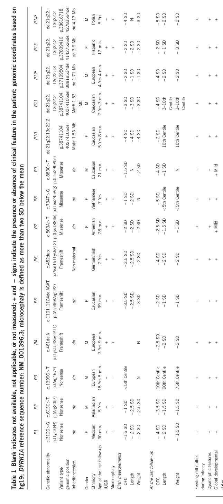

DYRK1A-related intellectual disability syndrome (intellectual developmental disorder, autosomal dominant 7; MRD7; OMIM 614104) is a rare, typically de novo autosomal dominant neurodevelopmental disorder caused by heterozygous loss-of-function (haploinsufficiency) of DYRK1A, a dosage-sensitive kinase in the Down syndrome critical region at 21q22.13. It is characterized by microcephaly, global developmental delay and intellectual disability with prominent expressive-language impairment, autism spectrum disorder, feeding difficulties, febrile seizures and later epilepsy, short stature, a recognizable facial gestalt, and frequent ocular abnormalities.
Ask a research question about DYRK1A-related intellectual disability syndrome. OpenScientist will conduct autonomous deep research using the Disorder Mechanisms Knowledge Base and PubMed literature (typically 10-30 minutes).
Do not include personal health information in your question. Questions and results are cached in your browser's local storage.
Conditions with similar clinical presentations that must be differentiated from DYRK1A-related intellectual disability syndrome:
name: DYRK1A-related intellectual disability syndrome
creation_date: "2026-06-03T00:00:00Z"
category: Mendelian
disease_term:
preferred_term: DYRK1A-related intellectual disability syndrome
term:
id: MONDO:0013578
label: DYRK1A-related intellectual disability syndrome
parents:
- Neurodevelopmental Disorder
description: >
DYRK1A-related intellectual disability syndrome (intellectual developmental
disorder, autosomal dominant 7; MRD7; OMIM 614104) is a rare, typically de
novo autosomal dominant neurodevelopmental disorder caused by heterozygous
loss-of-function (haploinsufficiency) of DYRK1A, a dosage-sensitive kinase in
the Down syndrome critical region at 21q22.13. It is characterized by
microcephaly, global developmental delay and intellectual disability with
prominent expressive-language impairment, autism spectrum disorder, feeding
difficulties, febrile seizures and later epilepsy, short stature, a recognizable
facial gestalt, and frequent ocular abnormalities.
synonyms:
- DYRK1A syndrome
- Intellectual developmental disorder, autosomal dominant 7
- MRD7
- Mental retardation, autosomal dominant 7
- DYRK1A haploinsufficiency syndrome
references:
- reference: PMID:25707398
title: "Disruptive de novo mutations of DYRK1A lead to a syndromic form of autism and ID."
- reference: PMID:25944381
title: "DYRK1A haploinsufficiency causes a new recognizable syndrome with microcephaly, intellectual disability, speech impairment, and distinct facies."
- reference: PMID:26137553
title: "DYRK1A-mediated Cyclin D1 Degradation in Neural Stem Cells Contributes to the Neurogenic Cortical Defects in Down Syndrome."
- reference: PMID:26677511
title: "DYRK1A Syndrome."
tags:
- GeneReviews
- reference: PMID:29034068
title: "Clinical phenotype of ASD-associated DYRK1A haploinsufficiency."
- reference: PMID:30831192
title: "Impaired development of neocortical circuits contributes to the neurological alterations in DYRK1A haploinsufficiency syndrome."
- reference: PMID:33562844
title: "Ocular Phenotype Associated with DYRK1A Variants."
- reference: PMID:37497568
title: "Characterizing the autism spectrum phenotype in DYRK1A-related syndrome."
- reference: PMID:37740550
title: "Growth charts in DYRK1A syndrome."
- reference: PMID:37797581
title: "An inhibitory circuit-based enhancer of DYRK1A function reverses Dyrk1a-associated impairment in social recognition."
- reference: PMID:38179410
title: "Identification of two novel and one rare mutation in DYRK1A and prenatal diagnoses in three Chinese families with intellectual Disability-7."
- reference: PMID:38622540
title: "Shared and divergent mental health characteristics of ADNP-, CHD8- and DYRK1A-related neurodevelopmental conditions."
- reference: PMID:39633007
title: "Lithium normalizes ASD-related neuronal, synaptic, and behavioral phenotypes in DYRK1A-knockin mice."
- reference: PMID:40182141
title: "DYRK1A roles in human neural progenitors."
classifications:
harrisons_chapter:
- classification_value: NEUROLOGIC
evidence:
- reference: PMID:26677511
reference_title: "DYRK1A Syndrome."
supports: SUPPORT
evidence_source: HUMAN_CLINICAL
snippet: "DYRK1A syndrome is characterized by intellectual disability including impaired speech development, autism spectrum disorder including anxious and/or stereotypic behavior Problems, and microcephaly."
explanation: >-
GeneReviews characterizes DYRK1A syndrome as a neurodevelopmental and
epileptic disorder with intellectual disability, autism spectrum
disorder, and microcephaly, supporting placement in Harrison's
Neurologic Part.
- classification_value: GENETICS_ENVIRONMENT_DISEASE
evidence:
- reference: PMID:26677511
reference_title: "DYRK1A Syndrome."
supports: SUPPORT
evidence_source: HUMAN_CLINICAL
snippet: "DYRK1A syndrome is an autosomal dominant disorder typically caused by a de novo pathogenic variant."
explanation: >-
GeneReviews establishes DYRK1A syndrome as a Mendelian autosomal
dominant disorder caused by pathogenic variants in DYRK1A.
prevalence:
- population: Worldwide (published literature and 100,000 Genomes Project)
measure_type: CASES_IN_LITERATURE
prevalence_class: ULTRA_RARE
notes: >-
General population incidence and prevalence are not yet established. A 2021
synthesis compiled 112 previously published patients, 14 self-reporting
cohort patients, and 19 patients from the UK 100,000 Genomes Project for a
total of 145 molecularly confirmed individuals from 144 unrelated families
carrying 108 unique disease-causing DYRK1A variants.
evidence:
- reference: PMID:33562844
reference_title: "Ocular Phenotype Associated with DYRK1A Variants."
supports: SUPPORT
evidence_source: HUMAN_CLINICAL
snippet: "DYRK1A-related intellectual disability syndrome is a rare disease. An accurate estimation of the incidence compared to the general population is yet to be established."
explanation: >-
Confirms that DYRK1A syndrome is a rare disorder whose general population
incidence has not yet been determined.
- reference: PMID:33562844
reference_title: "Ocular Phenotype Associated with DYRK1A Variants."
supports: SUPPORT
evidence_source: HUMAN_CLINICAL
snippet: "The 112 reported patients were added to our self-reporting cohort of 14 patients and the 19 patients from the 100,000 Genomes Project to generate a total of 145 patients from 144 unrelated families with 108 unique disease-causing variants involving DYRK1A (Figure 1)."
explanation: >-
Documents 145 molecularly confirmed patients across 144 unrelated families
in the combined literature and Genomics England synthesis.
progression:
- phase: Prenatal and neonatal onset
age_range: Prenatal to neonatal period
notes: >-
Disease manifestations frequently begin prenatally with intrauterine growth
restriction, low birth weight, and primary congenital microcephaly evident
at birth, accompanied by neonatal hypotonia and severe early feeding
difficulties (sucking/swallowing dysfunction and gastroesophageal reflux).
evidence:
- reference: PMID:37740550
reference_title: "Growth charts in DYRK1A syndrome."
supports: SUPPORT
evidence_source: HUMAN_CLINICAL
snippet: "In accordance with the literature, the charts show that individuals are more likely to present intrauterine growth restriction with low birth weight and microcephaly. The growth is then characterized by severe microcephaly, low weight, and short stature."
explanation: >-
Syndrome-specific growth charts from 92 individuals confirm prenatal
onset with intrauterine growth restriction, low birth weight, and
congenital microcephaly followed by persistent postnatal growth
deficiency.
- reference: PMID:25944381
reference_title: "DYRK1A haploinsufficiency causes a new recognizable syndrome with microcephaly, intellectual disability, speech impairment, and distinct facies."
supports: SUPPORT
evidence_source: HUMAN_CLINICAL
snippet: "All individuals shared congenital microcephaly at birth, intellectual disability, developmental delay, severe speech impairment, short stature, and distinct facial features."
explanation: >-
Demonstrates that microcephaly is congenital at birth across the
foundational cohort.
- phase: Infantile febrile seizures and evolution to epilepsy
age_range: Infancy to childhood
notes: >-
Febrile seizures typically present in infancy and frequently evolve into
chronic epilepsy with generalized tonic-clonic, atonic, absence, and
generalized myoclonic seizure types alongside global motor and language
delays.
evidence:
- reference: PMID:26677511
reference_title: "DYRK1A Syndrome."
supports: SUPPORT
evidence_source: HUMAN_CLINICAL
snippet: "Other medical concerns relate to febrile seizures in infancy; the development of epilepsy with seizures of the atonic, absence, and generalized myoclonic types; short stature; and gastrointestinal problems."
explanation: >-
Documents the characteristic progression from infantile febrile seizures
to childhood epilepsy with atonic, absence, and generalized myoclonic
seizures.
- reference: PMID:38179410
reference_title: "Identification of two novel and one rare mutation in DYRK1A and prenatal diagnoses in three Chinese families with intellectual Disability-7."
supports: SUPPORT
evidence_source: HUMAN_CLINICAL
snippet: "Intellectual disability-7 (MRD7) is a subtype disorder of intellectual disability (MRD) involving feeding difficulties, hypoactivity, and febrile seizures at an age of early onset, then progressive intellectual and physical development deterioration."
explanation: >-
Describes the early-onset infantile triad of feeding difficulties,
hypoactivity, and febrile seizures followed by ongoing developmental
impairment.
- phase: Childhood to adulthood neurodevelopmental and musculoskeletal course
age_range: Childhood through adulthood
notes: >-
Distal musculoskeletal and foot abnormalities—including long tapered
fingers, small hands and feet, toe syndactyly, and high arched feet—may not
become evident until adulthood. During childhood and adolescence, the
neurobehavioral profile includes prominent attentional and depressive
features relative to other syndromic neurodevelopmental cohorts.
evidence:
- reference: PMID:33562844
reference_title: "Ocular Phenotype Associated with DYRK1A Variants."
supports: SUPPORT
evidence_source: HUMAN_CLINICAL
quote_role: REVIEW_SYNTHESIS
snippet: "Hand and foot abnormalities include long tapered fingers, small hands and feet, toe syndactyly and high arched feet ... These features may not be seen until adulthood"
explanation: >-
Documents that distal musculoskeletal and foot abnormalities (long tapered
fingers, small hands and feet, toe syndactyly, and high arched feet) may
not appear until adulthood.
- reference: PMID:38622540
reference_title: "Shared and divergent mental health characteristics of ADNP-, CHD8- and DYRK1A-related neurodevelopmental conditions."
supports: SUPPORT
evidence_source: HUMAN_CLINICAL
snippet: "Patterns of mental health features varied by group, with anxiety most prominent for CHD8, oppositional features overrepresented among ADNP, and attentional and depressive features most prominent for DYRK1A."
explanation: >-
Characterizes the behavioral profile in DYRK1A syndrome, where
attentional and depressive symptoms are prominent relative to ADNP and
CHD8 cohorts.
inheritance:
- name: Autosomal dominant inheritance
inheritance_term:
preferred_term: Autosomal dominant inheritance
term:
id: HP:0000006
label: Autosomal dominant inheritance
expressivity: VARIABLE
description: >-
DYRK1A syndrome is inherited in an autosomal dominant manner, with the vast
majority of cases resulting from a de novo heterozygous pathogenic variant
or 21q22.13 microdeletion. When neither parent carries the proband's
pathogenic variant on leukocyte DNA testing, sibling recurrence risk is
estimated at approximately 1% due to the theoretical possibility of parental
germline mosaicism.
evidence:
- reference: PMID:26677511
reference_title: "DYRK1A Syndrome."
supports: SUPPORT
evidence_source: HUMAN_CLINICAL
snippet: "DYRK1A syndrome is an autosomal dominant disorder typically caused by a de novo pathogenic variant."
explanation: >-
Establishes autosomal dominant inheritance with predominantly de novo
origin.
- reference: PMID:26677511
reference_title: "DYRK1A Syndrome."
supports: SUPPORT
evidence_source: HUMAN_CLINICAL
snippet: "If the DYRK1A pathogenic variant identified in the proband is not identified in either parent, the recurrence risk to sibs is estimated to be 1% because of the theoretic possibility of parental germline mosaicism."
explanation: >-
Documents the ~1% theoretical sibling recurrence risk attributable to
potential parental germline mosaicism.
pathophysiology:
- name: DYRK1A Haploinsufficiency
description: >
DYRK1A-related intellectual disability syndrome is caused by heterozygous
loss-of-function variants (truncating mutations, deletions, and disruptive
missense changes) in DYRK1A, typically arising de novo. DYRK1A encodes a
dosage-sensitive dual-specificity tyrosine-phosphorylation-regulated kinase
that maps to the Down syndrome critical region on chromosome 21q22.13.
Whereas copy-number gain (trisomy 21) increases DYRK1A dosage,
loss-of-function variants produce haploinsufficiency, establishing DYRK1A as
a dosage-sensitive gene in which both increased and decreased dosage impair
neurodevelopment.
genes:
- preferred_term: DYRK1A
term:
id: hgnc:3091
label: DYRK1A
modifier: DECREASED
cell_types:
- preferred_term: Neuron
term:
id: CL:0000540
label: neuron
biological_processes:
- preferred_term: Protein Phosphorylation
term:
id: GO:0006468
label: protein phosphorylation
modifier: DECREASED
molecular_functions:
- preferred_term: protein serine/threonine kinase activity
term:
id: GO:0004674
label: protein serine/threonine kinase activity
modifier: DECREASED
- preferred_term: protein tyrosine kinase activity
term:
id: GO:0004713
label: protein tyrosine kinase activity
modifier: DECREASED
downstream:
- target: Disrupted Cortical Neurogenesis and Cell-Cycle Control
description: >-
Reduced DYRK1A kinase dosage disrupts cell-cycle control of cortical
neural stem cells, impairing neuron production.
- target: Impaired Neocortical Circuit Development and E/I Imbalance
description: >-
Reduced DYRK1A dosage alters the balance of excitatory and inhibitory
neocortical neurons and synapses, producing circuit-level dysfunction.
- target: Deeply set eyes
- target: Feeding difficulties
- target: Constipation
- target: Ocular abnormalities
- target: Refractive error
- target: Strabismus
- target: Optic nerve hypoplasia
- target: Cardiac anomalies
- target: Foot anomalies
- target: Pectus excavatum
- target: Kyphosis
- target: Scoliosis
- target: Renal agenesis
- target: Renal cyst
evidence:
- reference: PMID:25707398
reference_title: "Disruptive de novo mutations of DYRK1A lead to a syndromic form of autism and ID."
supports: SUPPORT
evidence_source: HUMAN_CLINICAL
snippet: "Truncation of DYRK1A in patients with developmental delay (DD) and \nautism spectrum disorder (ASD) suggests a different pathology associated with \nloss-of-function mutations."
explanation: >
Establishes that DYRK1A loss-of-function (haploinsufficiency) underlies the
syndrome, distinct from the gene-dosage increase seen in trisomy 21.
- reference: PMID:26677511
reference_title: "DYRK1A Syndrome."
supports: SUPPORT
evidence_source: HUMAN_CLINICAL
snippet: "DYRK1A syndrome is an autosomal dominant disorder typically \ncaused by a de novo pathogenic variant."
explanation: >
GeneReviews confirms the autosomal dominant, typically de novo origin of
pathogenic DYRK1A variants causing haploinsufficiency.
- reference: PMID:25944381
reference_title: "DYRK1A haploinsufficiency causes a new recognizable syndrome with microcephaly, intellectual disability, speech impairment, and distinct facies."
supports: SUPPORT
evidence_source: HUMAN_CLINICAL
snippet: "Dual-specificity tyrosine-(Y)-phosphorylation-regulated kinase 1 A (DYRK1A ) is \na highly conserved gene located in the Down syndrome critical region. It has an \nimportant role in early development and regulation of neuronal proliferation."
explanation: >
The foundational syndrome-delineation cohort establishes DYRK1A as a Down
syndrome critical region gene with a role in early development and neuronal
proliferation, underlying its dosage sensitivity.
- name: Disrupted Cortical Neurogenesis and Cell-Cycle Control
description: >
DYRK1A regulates the cell cycle of cortical neural stem cells (radial glia)
by controlling nuclear Cyclin D1 levels and G1-phase length, thereby
balancing proliferative versus neurogenic divisions. Altered DYRK1A dosage
disrupts the coupling of cell-cycle regulation and neuron production,
producing a deficit in cortical projection neurons that underlies
microcephaly and impaired corticogenesis. This dosage-sensitive control of
neurogenesis explains how both DYRK1A loss-of-function (syndrome) and gain
(Down syndrome) converge on cortical neuronal deficits.
cell_types:
- preferred_term: Neural Stem Cell (Radial Glia)
term:
id: CL:0000047
label: neural stem cell
- preferred_term: Cortical Projection Neuron
term:
id: CL:0000540
label: neuron
biological_processes:
- preferred_term: Neurogenesis
term:
id: GO:0022008
label: neurogenesis
modifier: DECREASED
- preferred_term: Cerebral Cortex Development
term:
id: GO:0021987
label: cerebral cortex development
modifier: ABNORMAL
- preferred_term: Cell Cycle G1 Phase Regulation
term:
id: GO:0007049
label: cell cycle
modifier: ABNORMAL
- preferred_term: Neural Precursor Cell Proliferation
term:
id: GO:0061351
label: neural precursor cell proliferation
modifier: DECREASED
evidence:
- reference: PMID:26137553
reference_title: "DYRK1A-mediated Cyclin D1 Degradation in Neural Stem Cells Contributes to the Neurogenic Cortical Defects in Down Syndrome."
supports: SUPPORT
evidence_source: MODEL_ORGANISM
snippet: "the human DYRK1A \nkinase on chromosome 21 tightly regulates the nuclear levels of Cyclin D1 in \nembryonic cortical stem (radial glia) cells"
explanation: >
Demonstrates the molecular role of DYRK1A in cell-cycle control of cortical
neural stem cells via Cyclin D1, the dosage-sensitive node linking DYRK1A
to corticogenesis.
- reference: PMID:26137553
reference_title: "DYRK1A-mediated Cyclin D1 Degradation in Neural Stem Cells Contributes to the Neurogenic Cortical Defects in Down Syndrome."
supports: SUPPORT
evidence_source: MODEL_ORGANISM
snippet: "These alterations promote asymmetric proliferative divisions at the \nexpense of neurogenic divisions, producing a deficit in cortical projection \nneurons that persists in postnatal stages."
explanation: >
Shows that DYRK1A dosage perturbation shifts the balance away from
neurogenic divisions, producing a cortical neuron deficit underlying
microcephaly.
- reference: PMID:40182141
reference_title: "DYRK1A roles in human neural progenitors."
supports: SUPPORT
evidence_source: IN_VITRO
snippet: "the overall impact is a marked reduction in \nhNSC proliferation."
explanation: >
In human neural stem cells, DYRK1A knockdown produces a marked reduction in
proliferation, providing human-cell evidence that reduced DYRK1A dosage
impairs neural precursor proliferation and corticogenesis (microcephaly).
- reference: PMID:40182141
reference_title: "DYRK1A roles in human neural progenitors."
supports: SUPPORT
evidence_source: IN_VITRO
snippet: "We identified 35 protein partners of DYRK1A involved in essential \npathways such as cell cycle regulation and DNA repair."
explanation: >
The DYRK1A interactome in human neural stem cells is enriched for cell-cycle
regulation, mechanistically linking DYRK1A to the cell-cycle control of
cortical progenitors.
downstream:
- target: Intellectual disability
- target: Global developmental delay
- target: Microcephaly
- target: Impaired speech development
- target: Short stature
- target: Intrauterine growth retardation
- name: Impaired Neocortical Circuit Development and E/I Imbalance
description: >
Beyond its early role in neural precursor proliferation, DYRK1A regulates the
assembly of neocortical and hippocampal circuits. Reduced DYRK1A dosage alters
the proportions of excitatory and inhibitory neurons and synapses, producing an
excitatory/inhibitory (E/I) imbalance. At the circuit level, DYRK1A controls a
hippocampal mossy fiber to parvalbumin interneuron feed-forward inhibition
pathway required for social recognition. This circuit-level dysfunction provides
a mechanistic link between DYRK1A haploinsufficiency and the autistic behavior,
social-cognition deficits, and seizure susceptibility of the syndrome, acting
downstream of and in parallel to the early neurogenic defect.
cell_types:
- preferred_term: Cortical Projection Neuron
term:
id: CL:0000540
label: neuron
- preferred_term: Parvalbumin-Positive Inhibitory Interneuron
term:
id: CL:0000099
label: interneuron
biological_processes:
- preferred_term: Cerebral Cortex Development
term:
id: GO:0021987
label: cerebral cortex development
modifier: ABNORMAL
- preferred_term: Synaptic Signaling
term:
id: GO:0099536
label: synaptic signaling
modifier: ABNORMAL
evidence:
- reference: PMID:30831192
reference_title: "Impaired development of neocortical circuits contributes to the neurological alterations in DYRK1A haploinsufficiency syndrome."
supports: SUPPORT
evidence_source: MODEL_ORGANISM
snippet: "haploinsufficient Dyrk1a+/- mutant mice mirror the neurological traits \nassociated with the human pathology, such as defective social interactions, \nstereotypic behaviors and epileptic activity."
explanation: >
Dyrk1a+/- mice recapitulate the core neurological traits of the human
syndrome, validating haploinsufficiency as the disease mechanism.
- reference: PMID:30831192
reference_title: "Impaired development of neocortical circuits contributes to the neurological alterations in DYRK1A haploinsufficiency syndrome."
supports: SUPPORT
evidence_source: MODEL_ORGANISM
snippet: "These mutant mice present altered \nproportions of excitatory and inhibitory neocortical neurons and synapses."
explanation: >
Demonstrates that DYRK1A haploinsufficiency shifts the balance of excitatory
and inhibitory neocortical neurons and synapses, establishing E/I imbalance
as a circuit-level mechanism.
- reference: PMID:37797581
reference_title: "An inhibitory circuit-based enhancer of DYRK1A function reverses Dyrk1a-associated impairment in social recognition."
supports: SUPPORT
evidence_source: MODEL_ORGANISM
snippet: "we identify a social \nexperience-sensitive mechanism in hippocampal mossy fiber-parvalbumin \ninterneuron (PV IN) synapses by which DYRK1A recruits feedforward inhibition of \nCA3 and CA2 to promote social recognition."
explanation: >
Maps a specific DYRK1A-dependent inhibitory circuit (mossy fiber to PV
interneuron feed-forward inhibition) controlling social recognition, linking
DYRK1A dosage to the social-cognition/autistic phenotype.
downstream:
- target: Autistic behavior
- target: Seizures
- target: Febrile seizures
- target: Hypertonia
- target: Gait disturbance
- target: Motor stereotypy
- target: Anxiety
- target: Attention deficit hyperactivity disorder
- target: Depression
phenotypes:
- category: Phenotype
name: Intellectual disability
description: >
The majority of affected individuals function in the moderate-to-severe range
of intellectual disability; milder presentations are also reported.
phenotype_term:
preferred_term: Intellectual disability
term:
id: HP:0001249
label: Intellectual disability
frequency: VERY_FREQUENT
evidence:
- reference: PMID:26677511
reference_title: "DYRK1A Syndrome."
supports: SUPPORT
evidence_source: HUMAN_CLINICAL
snippet: "DYRK1A syndrome is characterized by intellectual \ndisability including impaired speech development"
explanation: >
GeneReviews lists intellectual disability as a defining feature of the
syndrome.
- reference: PMID:37497568
reference_title: "Characterizing the autism spectrum phenotype in DYRK1A-related syndrome."
supports: SUPPORT
evidence_source: HUMAN_CLINICAL
snippet: "Diagnosis of ASD was confirmed in 85% and ID was confirmed in 89% of \nparticipants with DYRK1A syndrome."
explanation: >
In a dedicated cohort of 29 individuals with DYRK1A LGD variants,
intellectual disability was confirmed in 89%, supporting a VERY_FREQUENT
classification.
- category: Phenotype
name: Global developmental delay
description: >
Global psychomotor developmental delay is detected in infancy/early childhood
and is a near-universal early feature of DYRK1A syndrome.
phenotype_term:
preferred_term: Global developmental delay
term:
id: HP:0001263
label: Global developmental delay
frequency: VERY_FREQUENT
evidence:
- reference: PMID:37740550
reference_title: "Growth charts in DYRK1A syndrome."
supports: SUPPORT
evidence_source: HUMAN_CLINICAL
snippet: "Haploinsufficiency of DYRK1A causes a syndrome with \nglobal psychomotor delay and intellectual disability."
explanation: >
Global psychomotor delay is described as a defining consequence of DYRK1A
haploinsufficiency.
- reference: PMID:25944381
reference_title: "DYRK1A haploinsufficiency causes a new recognizable syndrome with microcephaly, intellectual disability, speech impairment, and distinct facies."
supports: SUPPORT
evidence_source: HUMAN_CLINICAL
snippet: "All \nindividuals shared congenital microcephaly at birth, intellectual disability, \ndevelopmental delay, severe speech impairment, short stature, and distinct \nfacial features."
explanation: >
Developmental delay was present in all individuals in the foundational
syndrome-delineation cohort.
- category: Phenotype
name: Microcephaly
description: >
Reduced head circumference (often primary/congenital) is a hallmark and
consistent feature of DYRK1A syndrome.
phenotype_term:
preferred_term: Microcephaly
term:
id: HP:0000252
label: Microcephaly
frequency: VERY_FREQUENT
evidence:
- reference: PMID:25707398
reference_title: "Disruptive de novo mutations of DYRK1A lead to a syndromic form of autism and ID."
supports: SUPPORT
evidence_source: HUMAN_CLINICAL
snippet: "It was characterized by ID, ASD, microcephaly, \nintrauterine growth retardation, febrile seizures in infancy, impaired speech, \nstereotypic behavior, hypertonia and a specific facial gestalt."
explanation: >
Microcephaly is a core component of the DYRK1A syndromic phenotype in the
defining cohort.
- reference: PMID:25944381
reference_title: "DYRK1A haploinsufficiency causes a new recognizable syndrome with microcephaly, intellectual disability, speech impairment, and distinct facies."
supports: SUPPORT
evidence_source: HUMAN_CLINICAL
snippet: "All \nindividuals shared congenital microcephaly at birth"
explanation: >
All individuals in the foundational cohort had congenital microcephaly,
supporting a VERY_FREQUENT classification.
- category: Phenotype
name: Autistic behavior
description: >
Autism spectrum disorder, frequently with anxious and/or stereotypic behavior
problems, is a characteristic feature.
phenotype_term:
preferred_term: Autistic behavior
term:
id: HP:0000729
label: Autistic behavior
frequency: VERY_FREQUENT
evidence:
- reference: PMID:26677511
reference_title: "DYRK1A Syndrome."
supports: SUPPORT
evidence_source: HUMAN_CLINICAL
snippet: "autism spectrum disorder \nincluding anxious and/or stereotypic behavior problems"
explanation: >
GeneReviews documents ASD with stereotypic/anxious behavior as a
characteristic feature.
- reference: PMID:37497568
reference_title: "Characterizing the autism spectrum phenotype in DYRK1A-related syndrome."
supports: SUPPORT
evidence_source: HUMAN_CLINICAL
snippet: "Diagnosis of ASD was confirmed in 85% and ID was confirmed in 89% of \nparticipants with DYRK1A syndrome."
explanation: >
ASD was confirmed in 85% of a 29-individual DYRK1A LGD cohort, supporting a
VERY_FREQUENT classification.
- category: Phenotype
name: Seizures
description: >
Affected individuals develop febrile seizures in infancy and epilepsy with
atonic, absence, and generalized myoclonic seizure types.
phenotype_term:
preferred_term: Seizure
term:
id: HP:0001250
label: Seizure
frequency: FREQUENT
evidence:
- reference: PMID:26677511
reference_title: "DYRK1A Syndrome."
supports: SUPPORT
evidence_source: HUMAN_CLINICAL
snippet: "the development of epilepsy with \nseizures of the atonic, absence, and generalized myoclonic types"
explanation: >
GeneReviews documents epilepsy with multiple generalized seizure types in
DYRK1A syndrome.
- category: Phenotype
name: Febrile seizures
description: >
Febrile seizures of early onset in infancy are characteristic of DYRK1A
syndrome and may precede the later development of afebrile epilepsy.
phenotype_term:
preferred_term: Febrile seizures
term:
id: HP:0002373
label: Febrile seizure (within the age range of 3 months to 6 years)
temporality: RECURRENT
evidence:
- reference: PMID:38179410
reference_title: "Identification of two novel and one rare mutation in DYRK1A and prenatal diagnoses in three Chinese families with intellectual Disability-7."
supports: SUPPORT
evidence_source: HUMAN_CLINICAL
snippet: "Intellectual disability-7 (MRD7) is a subtype disorder \nof intellectual disability (MRD) involving feeding difficulties, hypoactivity, \nand febrile seizures at an age of early onset"
explanation: >
Febrile seizures of early onset are described as a defining feature of MRD7
(DYRK1A syndrome).
- category: Phenotype
name: Feeding difficulties
description: >
Feeding problems are commonly reported, contributing to growth restriction
and requiring monitoring of nutritional status and safety of oral intake.
phenotype_term:
preferred_term: Feeding difficulties
term:
id: HP:0011968
label: Feeding difficulties
frequency: FREQUENT
evidence:
- reference: PMID:37740550
reference_title: "Growth charts in DYRK1A syndrome."
supports: SUPPORT
evidence_source: HUMAN_CLINICAL
snippet: "Low birth weight, growth \nrestriction with feeding difficulties, stature insufficiency, and microcephaly \nare frequently reported."
explanation: >
Feeding difficulties are frequently reported and contribute to growth
restriction in DYRK1A syndrome.
- category: Phenotype
name: Impaired speech development
description: >
Severely impaired or absent speech development accompanies the intellectual
disability in DYRK1A syndrome.
phenotype_term:
preferred_term: Delayed speech and language development
term:
id: HP:0000750
label: Delayed speech and language development
frequency: VERY_FREQUENT
evidence:
- reference: PMID:26677511
reference_title: "DYRK1A Syndrome."
supports: SUPPORT
evidence_source: HUMAN_CLINICAL
snippet: "DYRK1A syndrome is characterized by intellectual \ndisability including impaired speech development"
explanation: >
GeneReviews documents impaired speech development as part of the core
neurodevelopmental phenotype.
- category: Phenotype
name: Short stature
description: >
Postnatal growth restriction with short stature/stature insufficiency is
frequently observed, prompting the development of syndrome-specific growth
charts.
phenotype_term:
preferred_term: Short stature
term:
id: HP:0004322
label: Short stature
frequency: FREQUENT
evidence:
- reference: PMID:26677511
reference_title: "DYRK1A Syndrome."
supports: SUPPORT
evidence_source: HUMAN_CLINICAL
snippet: "Other medical \nconcerns relate to febrile seizures in infancy; the development of epilepsy with \nseizures of the atonic, absence, and generalized myoclonic types; short stature; \nand gastrointestinal problems."
explanation: >
GeneReviews lists short stature among the recurrent medical concerns in
DYRK1A syndrome.
- category: Phenotype
name: Deeply set eyes
description: >
Deep-set eyes are part of the recognizable facial gestalt of DYRK1A syndrome.
phenotype_term:
preferred_term: Deeply set eyes
term:
id: HP:0000490
label: Deeply set eye
evidence:
- reference: PMID:33562844
reference_title: "Ocular Phenotype Associated with DYRK1A Variants."
supports: SUPPORT
evidence_source: HUMAN_CLINICAL
snippet: "It has a particular facial gestalt of deep-set eyes, short nose with a broad tip, up-slanting palpebral fissures"
explanation: >
Deep-set eyes are explicitly named as a defining feature of the DYRK1A
syndrome facial gestalt.
- category: Phenotype
name: Hypertonia
description: >
Hypertonia is part of the neurological phenotype, alongside gait disturbances.
phenotype_term:
preferred_term: Hypertonia
term:
id: HP:0001276
label: Hypertonia
evidence:
- reference: PMID:26677511
reference_title: "DYRK1A Syndrome."
supports: SUPPORT
evidence_source: HUMAN_CLINICAL
snippet: "a typical facial gestalt, feeding problems, seizures, hypertonia, gait \ndisturbances, and foot anomalies."
explanation: >
GeneReviews lists hypertonia among the clinically recognizable features.
- category: Phenotype
name: Gait disturbance
description: >
Gait disturbances are commonly observed and contribute to the motor phenotype.
phenotype_term:
preferred_term: Gait disturbance
term:
id: HP:0001288
label: Gait disturbance
evidence:
- reference: PMID:26677511
reference_title: "DYRK1A Syndrome."
supports: SUPPORT
evidence_source: HUMAN_CLINICAL
snippet: "a typical facial gestalt, feeding problems, seizures, hypertonia, gait \ndisturbances, and foot anomalies."
explanation: >
GeneReviews lists gait disturbances among the recognizable clinical
features.
- category: Phenotype
name: Intrauterine growth retardation
description: >
Prenatal-onset growth restriction (intrauterine growth retardation, low birth
weight) is frequently reported.
phenotype_term:
preferred_term: Intrauterine growth retardation
term:
id: HP:0001511
label: Intrauterine growth retardation
evidence:
- reference: PMID:25707398
reference_title: "Disruptive de novo mutations of DYRK1A lead to a syndromic form of autism and ID."
supports: SUPPORT
evidence_source: HUMAN_CLINICAL
snippet: "It was characterized by ID, ASD, microcephaly, \nintrauterine growth retardation, febrile seizures in infancy, impaired speech, \nstereotypic behavior, hypertonia and a specific facial gestalt."
explanation: >
Intrauterine growth retardation is part of the defining DYRK1A syndromic
phenotype.
- category: Phenotype
name: Constipation
description: >
Gastrointestinal problems, including constipation, are reported and require
standard management.
phenotype_term:
preferred_term: Constipation
term:
id: HP:0002019
label: Constipation
evidence:
- reference: PMID:26677511
reference_title: "DYRK1A Syndrome."
supports: SUPPORT
evidence_source: HUMAN_CLINICAL
snippet: "standard treatment for orthopedic, dental, cardiac, \nurogenital, ophthalmologic, constipation, and other medical issues."
explanation: >
GeneReviews explicitly lists constipation among the medical issues
requiring standard treatment in DYRK1A syndrome.
- category: Phenotype
name: Ocular abnormalities
description: >
Ocular abnormalities are a frequent and clinically actionable comorbidity in
DYRK1A syndrome; in a combined cohort of 145 individuals, 62.1% had ocular
manifestations, prompting recommendations for routine ophthalmology referral.
phenotype_term:
preferred_term: Abnormality of the eye
term:
id: HP:0000478
label: Abnormality of the eye
frequency: FREQUENT
evidence:
- reference: PMID:33562844
reference_title: "Ocular Phenotype Associated with DYRK1A Variants."
supports: SUPPORT
evidence_source: HUMAN_CLINICAL
snippet: "Ninety out of 145 patients (62.1%) with heterozygous DYRK1A variants"
explanation: >
In a pooled cohort/literature analysis of 145 individuals, 62.1% had ocular
features, establishing ocular abnormalities as a frequent comorbidity.
- category: Phenotype
name: Refractive error
description: >
Refractive error (hyperopia/hypermetropia, myopia, astigmatism) is the most
common ocular finding, present in 35.6% of DYRK1A individuals with ocular
features; it is a treatable cause of visual impairment.
phenotype_term:
preferred_term: Refractive error
term:
id: HP:0000539
label: Abnormality of refraction
evidence:
- reference: PMID:33562844
reference_title: "Ocular Phenotype Associated with DYRK1A Variants."
supports: SUPPORT
evidence_source: HUMAN_CLINICAL
snippet: "refractive error (35.6%, 32/90)"
explanation: >
Refractive error was the most common ocular pathology, seen in 35.6%
(32/90) of individuals with ocular features.
- category: Phenotype
name: Strabismus
description: >
Strabismus is a common ocular finding in DYRK1A syndrome, seen in 21.1% of
individuals with ocular features, at an incidence well above the general
population.
phenotype_term:
preferred_term: Strabismus
term:
id: HP:0000486
label: Strabismus
evidence:
- reference: PMID:33562844
reference_title: "Ocular Phenotype Associated with DYRK1A Variants."
supports: SUPPORT
evidence_source: HUMAN_CLINICAL
snippet: "strabismus (21.1%, 19/90)"
explanation: >
Strabismus was present in 21.1% (19/90) of individuals with ocular features.
- category: Phenotype
name: Optic nerve hypoplasia
description: >
Optic nerve hypoplasia is an important cause of visual impairment in DYRK1A
syndrome; DYRK1A has an established role in optic nerve development, and
Dyrk1a+/- mice show retinal ganglion cell and optic nerve axon deficits.
phenotype_term:
preferred_term: Optic nerve hypoplasia
term:
id: HP:0000609
label: Optic nerve hypoplasia
evidence:
- reference: PMID:33562844
reference_title: "Ocular Phenotype Associated with DYRK1A Variants."
supports: SUPPORT
evidence_source: HUMAN_CLINICAL
snippet: "optic nerve hypoplasia (13%, 12/90)"
explanation: >
Optic nerve hypoplasia was present in 13% (12/90) of individuals with
ocular features and is a significant cause of visual impairment.
- category: Phenotype
name: Motor stereotypy
description: >
Stereotypic behaviors are very common in DYRK1A syndrome and form part of the
behavioral/autistic phenotype.
phenotype_term:
preferred_term: Motor stereotypy
term:
id: HP:0000733
label: Motor stereotypy
evidence:
- reference: PMID:25707398
reference_title: "Disruptive de novo mutations of DYRK1A lead to a syndromic form of autism and ID."
supports: SUPPORT
evidence_source: HUMAN_CLINICAL
snippet: "It was characterized by ID, ASD, microcephaly, \nintrauterine growth retardation, febrile seizures in infancy, impaired speech, \nstereotypic behavior, hypertonia and a specific facial gestalt."
explanation: >
Stereotypic behavior is part of the defining DYRK1A syndromic phenotype.
- category: Phenotype
name: Anxiety
description: >
Anxiety and anxious behavior are common in DYRK1A syndrome, forming part of
the behavioral/autistic phenotype alongside altered stress reactions.
phenotype_term:
preferred_term: Anxiety
term:
id: HP:0000739
label: Anxiety
evidence:
- reference: PMID:26677511
reference_title: "DYRK1A Syndrome."
supports: SUPPORT
evidence_source: HUMAN_CLINICAL
snippet: "autism spectrum disorder \nincluding anxious and/or stereotypic behavior problems"
explanation: >
GeneReviews lists anxious behavior problems as part of the
autism-spectrum behavioral phenotype of DYRK1A syndrome.
- reference: PMID:33562844
reference_title: "Ocular Phenotype Associated with DYRK1A Variants."
supports: SUPPORT
evidence_source: HUMAN_CLINICAL
snippet: "febrile seizures, anxiety, altered stress reactions"
explanation: >
Anxiety and altered stress reactions are reported among the recurrent
findings in DYRK1A-related intellectual disability syndrome.
- category: Phenotype
name: Cardiac anomalies
description: >
Congenital cardiac anomalies, including ventricular septal defect, patent
ductus arteriosus, and aortic valve disease, are reported and warrant
cardiac evaluation and follow-up.
phenotype_term:
preferred_term: Cardiac anomalies
term:
id: HP:0001627
label: Abnormal heart morphology
evidence:
- reference: PMID:26677511
reference_title: "DYRK1A Syndrome."
supports: SUPPORT
evidence_source: HUMAN_CLINICAL
snippet: "Ophthalmologic, urogenital, cardiac, and/or \ndental anomalies have been reported."
explanation: >
GeneReviews lists cardiac anomalies among the reported organ-system
manifestations of DYRK1A syndrome.
- reference: PMID:33562844
reference_title: "Ocular Phenotype Associated with DYRK1A Variants."
supports: SUPPORT
evidence_source: HUMAN_CLINICAL
snippet: "cardiac features (including ventricular septal defect, patent ductus arteriosus, aortic valve disease)"
explanation: >
Specific cardiac defects reported in DYRK1A syndrome include ventricular
septal defect, patent ductus arteriosus, and aortic valve disease.
- category: Phenotype
name: Foot anomalies
description: >
Foot abnormalities, including small feet, toe syndactyly, and high arched
feet, are part of the recognizable phenotype of DYRK1A syndrome.
phenotype_term:
preferred_term: Foot anomalies
term:
id: HP:0001760
label: Abnormal foot morphology
evidence:
- reference: PMID:26677511
reference_title: "DYRK1A Syndrome."
supports: SUPPORT
evidence_source: HUMAN_CLINICAL
snippet: "typical facial gestalt, feeding problems, seizures, hypertonia, gait \ndisturbances, and foot anomalies."
explanation: >
GeneReviews lists foot anomalies among the clinically recognizable
features of DYRK1A syndrome.
- reference: PMID:33562844
reference_title: "Ocular Phenotype Associated with DYRK1A Variants."
supports: SUPPORT
evidence_source: HUMAN_CLINICAL
snippet: "Hand and foot abnormalities include long tapered fingers, small hands and feet, toe syndactyly and high arched feet"
explanation: >
Foot abnormalities in DYRK1A syndrome include small feet, toe syndactyly,
and high arched feet.
- category: Behavioral
name: Attention deficit hyperactivity disorder
description: >-
Attentional problems and hyperactivity are prominent neurobehavioral
features of DYRK1A syndrome compared with other monogenic autism-associated
conditions such as CHD8- and ADNP-related disorders.
phenotype_term:
preferred_term: Attention deficit hyperactivity disorder
term:
id: HP:0007018
label: Attention deficit hyperactivity disorder
evidence:
- reference: PMID:38622540
reference_title: "Shared and divergent mental health characteristics of ADNP-, CHD8- and DYRK1A-related neurodevelopmental conditions."
supports: SUPPORT
evidence_source: HUMAN_CLINICAL
snippet: "Patterns of mental health features varied by group, with anxiety most prominent for CHD8, oppositional features overrepresented among ADNP, and attentional and depressive features most prominent for DYRK1A."
explanation: >-
Comparative phenotyping across monogenic neurodevelopmental conditions
identifies attentional features as particularly prominent in the DYRK1A
group.
- category: Behavioral
name: Depression
description: >-
Depressive and internalizing affective symptoms are overrepresented in
children and young adults with DYRK1A syndrome relative to ADNP- and
CHD8-related neurodevelopmental disorders.
phenotype_term:
preferred_term: Depression
term:
id: HP:0000716
label: Depression
evidence:
- reference: PMID:38622540
reference_title: "Shared and divergent mental health characteristics of ADNP-, CHD8- and DYRK1A-related neurodevelopmental conditions."
supports: SUPPORT
evidence_source: HUMAN_CLINICAL
snippet: "Patterns of mental health features varied by group, with anxiety most prominent for CHD8, oppositional features overrepresented among ADNP, and attentional and depressive features most prominent for DYRK1A."
explanation: >-
Establishes that depressive features are overrepresented in individuals
with pathogenic DYRK1A variants compared with ADNP and CHD8 cohorts.
- category: Musculoskeletal
name: Pectus excavatum
description: >-
Thoracic wall deformity (pectus excavatum) is reported among the thoracic
and spinal manifestations of DYRK1A syndrome.
phenotype_term:
preferred_term: Pectus excavatum
term:
id: HP:0000767
label: Pectus excavatum
evidence:
- reference: PMID:33562844
reference_title: "Ocular Phenotype Associated with DYRK1A Variants."
supports: SUPPORT
evidence_source: HUMAN_CLINICAL
quote_role: REVIEW_SYNTHESIS
snippet: "Other findings include psychomotor delay, febrile seizures, anxiety, altered stress reactions ... spinal and thoracic features (including pectus excavatum, kyphosis and scoliosis) ... gastrointestinal features (including feeding difficulties and gastroesophageal reflux) ... cardiac features (including ventricular septal defect, patent ductus arteriosus, aortic valve disease), as well as renal features (agenesis and renal cysts)"
explanation: >-
Identifies pectus excavatum among the thoracic features associated with
DYRK1A syndrome.
- category: Musculoskeletal
name: Kyphosis
description: >-
Spinal curvature abnormality (kyphosis) is reported as part of the axial
skeletal spectrum of DYRK1A syndrome.
phenotype_term:
preferred_term: Kyphosis
term:
id: HP:0002808
label: Kyphosis
evidence:
- reference: PMID:33562844
reference_title: "Ocular Phenotype Associated with DYRK1A Variants."
supports: SUPPORT
evidence_source: HUMAN_CLINICAL
quote_role: REVIEW_SYNTHESIS
snippet: "Other findings include psychomotor delay, febrile seizures, anxiety, altered stress reactions ... spinal and thoracic features (including pectus excavatum, kyphosis and scoliosis) ... gastrointestinal features (including feeding difficulties and gastroesophageal reflux) ... cardiac features (including ventricular septal defect, patent ductus arteriosus, aortic valve disease), as well as renal features (agenesis and renal cysts)"
explanation: >-
Identifies kyphosis among the spinal features associated with DYRK1A
syndrome.
- category: Musculoskeletal
name: Scoliosis
description: >-
Lateral spinal curvature (scoliosis) is reported among the spinal
abnormalities of DYRK1A syndrome.
phenotype_term:
preferred_term: Scoliosis
term:
id: HP:0002650
label: Scoliosis
evidence:
- reference: PMID:33562844
reference_title: "Ocular Phenotype Associated with DYRK1A Variants."
supports: SUPPORT
evidence_source: HUMAN_CLINICAL
quote_role: REVIEW_SYNTHESIS
snippet: "Other findings include psychomotor delay, febrile seizures, anxiety, altered stress reactions ... spinal and thoracic features (including pectus excavatum, kyphosis and scoliosis) ... gastrointestinal features (including feeding difficulties and gastroesophageal reflux) ... cardiac features (including ventricular septal defect, patent ductus arteriosus, aortic valve disease), as well as renal features (agenesis and renal cysts)"
explanation: >-
Identifies scoliosis among the spinal features associated with DYRK1A
syndrome.
- category: Renal
name: Renal agenesis
description: >-
Congenital renal agenesis is reported as an associated urogenital anomaly
in individuals with DYRK1A syndrome.
phenotype_term:
preferred_term: Renal agenesis
term:
id: HP:0000104
label: Renal agenesis
evidence:
- reference: PMID:33562844
reference_title: "Ocular Phenotype Associated with DYRK1A Variants."
supports: SUPPORT
evidence_source: HUMAN_CLINICAL
quote_role: REVIEW_SYNTHESIS
snippet: "Other findings include psychomotor delay, febrile seizures, anxiety, altered stress reactions ... spinal and thoracic features (including pectus excavatum, kyphosis and scoliosis) ... gastrointestinal features (including feeding difficulties and gastroesophageal reflux) ... cardiac features (including ventricular septal defect, patent ductus arteriosus, aortic valve disease), as well as renal features (agenesis and renal cysts)"
explanation: >-
Identifies renal agenesis among the renal anomalies reported in DYRK1A
syndrome.
- category: Renal
name: Renal cyst
description: >-
Renal cysts are reported among the congenital and structural renal
manifestations of DYRK1A syndrome.
phenotype_term:
preferred_term: Renal cyst
term:
id: HP:0000107
label: Renal cyst
evidence:
- reference: PMID:33562844
reference_title: "Ocular Phenotype Associated with DYRK1A Variants."
supports: SUPPORT
evidence_source: HUMAN_CLINICAL
quote_role: REVIEW_SYNTHESIS
snippet: "Other findings include psychomotor delay, febrile seizures, anxiety, altered stress reactions ... spinal and thoracic features (including pectus excavatum, kyphosis and scoliosis) ... gastrointestinal features (including feeding difficulties and gastroesophageal reflux) ... cardiac features (including ventricular septal defect, patent ductus arteriosus, aortic valve disease), as well as renal features (agenesis and renal cysts)"
explanation: >-
Identifies renal cysts among the renal anomalies reported in DYRK1A
syndrome.
genetic:
- name: DYRK1A
association: CAUSAL
relationship_type: CAUSATIVE
variant_origin: DE_NOVO
gene_term:
preferred_term: DYRK1A
term:
id: hgnc:3091
label: DYRK1A
case_fractions:
- population: autism spectrum disorder cohorts
case_fraction_low: 0.1
case_fraction_high: 0.5
notes: >-
De novo disruptive DYRK1A variants are recurrently identified in 0.1% to
0.5% of individuals ascertained for autism spectrum disorder.
evidence:
- reference: PMID:29034068
reference_title: "Clinical phenotype of ASD-associated DYRK1A haploinsufficiency."
supports: SUPPORT
evidence_source: HUMAN_CLINICAL
quote_role: BACKGROUND
snippet: "DYRK1A is a gene recurrently disrupted in 0.1-0.5% of the ASD population."
explanation: >-
Reports that 0.1-0.5% of individuals in autism spectrum disorder
cohorts carry disruptive DYRK1A variants.
- reference: PMID:33562844
reference_title: "Ocular Phenotype Associated with DYRK1A Variants."
supports: SUPPORT
evidence_source: HUMAN_CLINICAL
quote_role: REVIEW_SYNTHESIS
snippet: "Interestingly, it is estimated that 0.1–0.5% of patients with an ASD may have a mutation involving DYRK1A"
explanation: >-
Independent review synthesis confirming the 0.1-0.5% case fraction
among individuals with autism spectrum disorder.
inheritance:
- name: Autosomal dominant
inheritance_term:
preferred_term: Autosomal dominant inheritance
term:
id: HP:0000006
label: Autosomal dominant inheritance
evidence:
- reference: PMID:26677511
reference_title: "DYRK1A Syndrome."
supports: SUPPORT
evidence_source: HUMAN_CLINICAL
snippet: "DYRK1A syndrome is an autosomal dominant disorder typically \ncaused by a de novo pathogenic variant."
explanation: >
GeneReviews documents autosomal dominant inheritance of DYRK1A syndrome,
with most cases arising de novo.
notes: >
Dual-specificity tyrosine-phosphorylation-regulated kinase 1A. DYRK1A
syndrome is caused by heterozygous loss-of-function variants (truncating
variants, intragenic and larger deletions, and disruptive missense),
typically de novo. DYRK1A is located at 21q22.13 within the Down syndrome
critical region.
evidence:
- reference: PMID:25707398
reference_title: "Disruptive de novo mutations of DYRK1A lead to a syndromic form of autism and ID."
supports: SUPPORT
evidence_source: HUMAN_CLINICAL
snippet: "Comparison of our data and published \ncases with 8696 controls identified a significant enrichment of DYRK1A \ntruncating mutations (P=0.00851) and an excess of de novo mutations"
explanation: >
Demonstrates statistically significant enrichment of de novo DYRK1A
truncating mutations in affected individuals, establishing causation.
- reference: PMID:26677511
reference_title: "DYRK1A Syndrome."
supports: SUPPORT
evidence_source: HUMAN_CLINICAL
snippet: "DYRK1A syndrome is an autosomal dominant disorder typically \ncaused by a de novo pathogenic variant."
explanation: >
GeneReviews confirms autosomal dominant inheritance with typically de novo
pathogenic variants.
- reference: PMID:25944381
reference_title: "DYRK1A haploinsufficiency causes a new recognizable syndrome with microcephaly, intellectual disability, speech impairment, and distinct facies."
supports: SUPPORT
evidence_source: HUMAN_CLINICAL
snippet: "We have identified 14 \nindividuals with de novo heterozygous variants of DYRK1A; five with \nmicrodeletions, three with small insertions or deletions (INDELs) and six with \ndeleterious SNVs."
explanation: >
Documents the spectrum of de novo DYRK1A variant types (microdeletions,
INDELs, deleterious SNVs) underlying haploinsufficiency.
- reference: PMID:33562844
reference_title: "Ocular Phenotype Associated with DYRK1A Variants."
supports: SUPPORT
evidence_source: HUMAN_CLINICAL
snippet: "The most prevalent mutations were loss-of-function nonsense (40/108) and frameshift (39/108)."
explanation: >
A 108-variant landscape confirms that loss-of-function nonsense and
frameshift variants predominate, consistent with a haploinsufficiency
mechanism.
diagnosis:
- name: Molecular Genetic Testing of DYRK1A
description: >-
Definitive diagnosis requires identification of a heterozygous pathogenic
single-nucleotide variant, small insertion/deletion, or intragenic deletion
in DYRK1A via molecular genetic testing in a proband with suggestive
neurodevelopmental and craniofacial findings.
diagnosis_term:
preferred_term: genetic testing
term:
id: NCIT:C15709
label: Genetic Testing
results: >-
Heterozygous pathogenic loss-of-function (nonsense, frameshift, canonical
splice-site, or intragenic deletion) or kinase-domain missense variant in
DYRK1A, typically confirmed de novo by parental testing.
evidence:
- reference: PMID:26677511
reference_title: "DYRK1A Syndrome."
supports: SUPPORT
evidence_source: HUMAN_CLINICAL
snippet: "The diagnosis of DYRK1A syndrome is established in a proband with suggestive findings and a heterozygous pathogenic variant in DYRK1A identified by molecular genetic testing."
explanation: >-
GeneReviews diagnostic standard establishing that molecular identification
of a heterozygous pathogenic DYRK1A variant confirms the diagnosis.
- name: Trio Whole Exome and Whole Genome Sequencing
description: >-
Because clinical features overlap broadly with other syndromic intellectual
disability and autism spectrum disorders, diagnosis is most commonly
established by trio whole-exome sequencing (WES) or whole-genome sequencing
(WGS), with Sanger sequencing or quantitative PCR confirmation.
diagnosis_term:
preferred_term: whole exome sequencing
term:
id: NCIT:C101295
label: Whole Exome Sequencing
results: >-
Identification of de novo DYRK1A SNVs, indels, or copy-number variants and
exclusion of parental carrier status.
evidence:
- reference: PMID:38179410
reference_title: "Identification of two novel and one rare mutation in DYRK1A and prenatal diagnoses in three Chinese families with intellectual Disability-7."
supports: SUPPORT
evidence_source: HUMAN_CLINICAL
snippet: "Genetic investigation of the probands and their next of kin was performed by Trio-whole exome sequencing (WES). Sanger sequencing or quantitative PCR technologies were then used as the next step to verify the variants confirmed with Trio-WES for the three families."
explanation: >-
Demonstrates the clinical diagnostic workflow using trio-WES followed by
orthogonal Sanger sequencing or qPCR verification.
- reference: PMID:33562844
reference_title: "Ocular Phenotype Associated with DYRK1A Variants."
supports: SUPPORT
evidence_source: HUMAN_CLINICAL
snippet: "Participants of the UK 100,000 Genomes Project underwent whole genome sequence (WGS) analysis"
explanation: >-
Documents whole-genome sequencing as a primary diagnostic modality for
identifying pathogenic DYRK1A variants in national rare-disease cohorts.
- name: Chromosomal Microarray and Cytogenetic Analysis
description: >-
Array comparative genomic hybridization (aCGH) or karyotype analysis
detects partial monosomy 21 and 21q22.13 microdeletions or balanced
translocations disrupting DYRK1A when sequence analysis is uninformative or
when a contiguous-gene deletion is suspected.
diagnosis_term:
preferred_term: microarray analysis
term:
id: NCIT:C18477
label: Microarray Analysis
results: >-
Heterozygous 21q22.13 microdeletion or chromosomal rearrangement
encompassing DYRK1A.
evidence:
- reference: PMID:33562844
reference_title: "Ocular Phenotype Associated with DYRK1A Variants."
supports: SUPPORT
evidence_source: HUMAN_CLINICAL
quote_role: REVIEW_SYNTHESIS
snippet: "Haploinsufficiency of DYRK1A through chromosomal loss of heterozygosity, microdeletions or intragenic mutation causes the rare DYRK1A-related intellectual disability syndrome, which was first detected through karyotype analysis of partial monosomy of chromosome 21"
explanation: >-
Summarizes the diagnostic role of karyotyping in detecting partial
monosomy 21 and chromosomal deletions disrupting DYRK1A.
- reference: PMID:33562844
reference_title: "Ocular Phenotype Associated with DYRK1A Variants."
supports: SUPPORT
evidence_source: HUMAN_CLINICAL
quote_role: REVIEW_SYNTHESIS
snippet: "Comparative genomic hybridization has since allowed the discovery of a number of cases of chromosome 21 microdeletions, and the syndrome was termed autosomal dominant mental retardation 7 (MRD7, MIM#614104)"
explanation: >-
Documents comparative genomic hybridization (microarray analysis) in the
detection of chromosome 21 microdeletions encompassing DYRK1A.
- name: Brain Magnetic Resonance Imaging and Electroencephalography
description: >-
Brain MRI and EEG are used in the diagnostic workup and baseline clinical
characterization to evaluate structural brain abnormalities (such as
global cerebral hypoplasia, enlarged ventricles, corpus callosum
hypoplasia, and delayed myelination) and epileptiform activity.
diagnosis_term:
preferred_term: magnetic resonance imaging
term:
id: NCIT:C16809
label: Magnetic Resonance Imaging
evidence:
- reference: PMID:38179410
reference_title: "Identification of two novel and one rare mutation in DYRK1A and prenatal diagnoses in three Chinese families with intellectual Disability-7."
supports: SUPPORT
evidence_source: HUMAN_CLINICAL
snippet: "We collected retrospective clinical diagnostic evidence for the three probands in our study, which included magnetic resonance imaging (MRI), computerized tomography (CT), electroencephalogram (EEG), and intelligence tests for the three probands in our study."
explanation: >-
Documents neuroimaging (MRI/CT), EEG, and standardized developmental/IQ
testing as core components of the clinical diagnostic workup.
differential_diagnoses:
- name: Angelman syndrome
disease_term:
preferred_term: Angelman syndrome
term:
id: MONDO:0007113
label: Angelman syndrome
description: >-
Shares severe intellectual disability, absent or minimal speech,
microcephaly, febrile and afebrile seizures, and a broad-based ataxic or
hypertonic gait, leading several DYRK1A probands to be evaluated for
Angelman syndrome prior to exome sequencing.
distinguishing_features:
- Characteristic DYRK1A facial gestalt (deep-set eyes, bitemporal narrowing, prominent nasal root, thin upper vermilion, microretrognathia) rather than Angelman facies.
- Congenital microcephaly and intrauterine growth restriction are typical of DYRK1A syndrome, whereas microcephaly in Angelman syndrome usually develops postnatally.
- Heterozygous pathogenic variant in DYRK1A at 21q22.13 rather than 15q11-q13 maternal deletion, UBE3A mutation, or imprinting defect.
evidence:
- reference: PMID:25944381
reference_title: "DYRK1A haploinsufficiency causes a new recognizable syndrome with microcephaly, intellectual disability, speech impairment, and distinct facies."
supports: SUPPORT
evidence_source: HUMAN_CLINICAL
snippet: "Our study demonstrates that haploinsufficiency of DYRK1A results in a new recognizable syndrome, which should be considered in individuals with Angelman syndrome-like features and distinct facial features."
explanation: >-
Explicitly identifies Angelman syndrome as a key clinical differential
diagnosis for DYRK1A haploinsufficiency.
- name: ADNP-related neurodevelopmental disorder (Helsmoortel-van der Aa syndrome)
disease_term:
preferred_term: ADNP-related multiple congenital anomalies - intellectual disability - autism spectrum disorder
term:
id: MONDO:0014379
label: ADNP-related multiple congenital anomalies - intellectual disability - autism spectrum disorder
description: >-
Autosomal dominant de novo neurodevelopmental disorder sharing global
developmental delay, intellectual disability, autism spectrum disorder,
and overlapping psychiatric and neurobehavioral features with DYRK1A
syndrome.
distinguishing_features:
- Primary microcephaly and short stature strongly favor DYRK1A syndrome.
- Behavioral profile in ADNP syndrome shows a higher burden of oppositional and externalizing behaviors, whereas attentional and depressive features are more prominent in DYRK1A syndrome.
- Pathogenic variant in ADNP rather than DYRK1A.
evidence:
- reference: PMID:38622540
reference_title: "Shared and divergent mental health characteristics of ADNP-, CHD8- and DYRK1A-related neurodevelopmental conditions."
supports: SUPPORT
evidence_source: HUMAN_CLINICAL
snippet: "Patterns of mental health features varied by group, with anxiety most prominent for CHD8, oppositional features overrepresented among ADNP, and attentional and depressive features most prominent for DYRK1A."
explanation: >-
Directly contrasts the neurobehavioral profiles of ADNP-, CHD8-, and
DYRK1A-related neurodevelopmental disorders.
- reference: PMID:38622540
reference_title: "Shared and divergent mental health characteristics of ADNP-, CHD8- and DYRK1A-related neurodevelopmental conditions."
supports: SUPPORT
evidence_source: HUMAN_CLINICAL
snippet: "Despite shared associations with autism and intellectual disability, disruptive variants in ADNP, CHD8, and DYRK1A may yield variable psychiatric phenotypes among children and adolescents."
explanation: >-
Documents the shared autism and intellectual disability presentation alongside
distinct psychiatric profiles across ADNP, CHD8, and DYRK1A syndromes.
- name: CHD8-related neurodevelopmental disorder with overgrowth
disease_term:
preferred_term: intellectual developmental disorder with autism and macrocephaly
term:
id: MONDO:0014017
label: intellectual developmental disorder with autism and macrocephaly
description: >-
Monogenic de novo autism-associated neurodevelopmental disorder sharing
autism spectrum disorder and intellectual disability with DYRK1A syndrome,
while diverging sharply in head growth and internalizing psychiatric profile.
distinguishing_features:
- Larger head circumference (macrocephaly) characterizes CHD8-related disorder, whereas congenital microcephaly and short stature characterize DYRK1A syndrome.
- Lower cognitive and adaptive functioning scores in DYRK1A syndrome compared with idiopathic ASD and smaller head size compared with both idiopathic ASD and CHD8 cases.
- Anxiety is the most prominent mental health feature in CHD8, whereas attentional and depressive symptoms predominate in DYRK1A.
evidence:
- reference: PMID:29034068
reference_title: "Clinical phenotype of ASD-associated DYRK1A haploinsufficiency."
supports: SUPPORT
evidence_source: HUMAN_CLINICAL
snippet: "When compared quantitatively, DYRK1A cases presented with significantly lower IQ and adaptive functioning compared to idiopathic cases and significantly smaller head size compared to both idiopathic and CHD8 cases."
explanation: >-
Quantitative head-circumference and cognitive comparison distinguishing
DYRK1A haploinsufficiency from CHD8-related ASD.
- reference: PMID:29034068
reference_title: "Clinical phenotype of ASD-associated DYRK1A haploinsufficiency."
supports: SUPPORT
evidence_source: HUMAN_CLINICAL
snippet: "Cases with DYRK1A mutations are also distinguishable from disruptive mutations to CHD8 by head size."
explanation: >-
Establishes head circumference (microcephaly vs macrocephaly) as a direct
clinical discriminator between DYRK1A and CHD8 mutations.
- reference: PMID:38622540
reference_title: "Shared and divergent mental health characteristics of ADNP-, CHD8- and DYRK1A-related neurodevelopmental conditions."
supports: SUPPORT
evidence_source: HUMAN_CLINICAL
snippet: "Patterns of mental health features varied by group, with anxiety most prominent for CHD8, oppositional features overrepresented among ADNP, and attentional and depressive features most prominent for DYRK1A."
explanation: >-
Distinguishes the anxiety-predominant mental health profile of CHD8 from
the attentional and depressive profile of DYRK1A syndrome.
- name: Idiopathic autism spectrum disorder
disease_term:
preferred_term: autism spectrum disorder
term:
id: MONDO:0005258
label: autism spectrum disorder
description: >-
Between 40% and 88% of individuals with molecularly confirmed DYRK1A
syndrome initially receive a clinical diagnosis of autism spectrum disorder
before genetic testing identifies the underlying syndromic etiology.
distinguishing_features:
- Congenital microcephaly, intrauterine and postnatal growth retardation, febrile seizures/epilepsy, neonatal feeding difficulties, distinct facial dysmorphism, and ocular anomalies distinguish DYRK1A syndrome from nonsyndromic ASD.
- Significantly lower nonverbal and verbal IQ and adaptive functioning compared with idiopathic ASD cohorts.
evidence:
- reference: PMID:33562844
reference_title: "Ocular Phenotype Associated with DYRK1A Variants."
supports: SUPPORT
evidence_source: HUMAN_CLINICAL
quote_role: REVIEW_SYNTHESIS
snippet: "Between 40 and 88% of patients with molecularly confirmed DYRK1A-related intellectual disability syndrome are initially misdiagnosed with ASD, due to its overlapping clinical features and it being more common"
explanation: >-
Documents the high rate of initial clinical misdiagnosis as nonsyndromic
autism spectrum disorder.
- reference: PMID:29034068
reference_title: "Clinical phenotype of ASD-associated DYRK1A haploinsufficiency."
supports: SUPPORT
evidence_source: HUMAN_CLINICAL
snippet: "Results confirm a core clinical phenotype for DYRK1A disruptions, with a combination of features that is distinct from idiopathic ASD."
explanation: >-
Quantitative comparison with idiopathic ASD confirms a distinct syndromic
cluster in DYRK1A haploinsufficiency.
treatments:
- name: Antiepileptic Pharmacotherapy
action_category: THERAPEUTIC
therapeutic_modality: SMALL_MOLECULE
description: >
Routine treatment of epilepsy under the care of a neurologist for the febrile,
atonic, absence, and generalized myoclonic seizures seen in DYRK1A syndrome.
treatment_term:
preferred_term: Pharmacotherapy
term:
id: NCIT:C15986
label: Pharmacotherapy
target_mechanisms:
- target: Impaired Neocortical Circuit Development and E/I Imbalance
treatment_effect: MODULATES
description: >-
Symptomatic antiepileptic pharmacotherapy modulates network
hyperexcitability downstream of excitatory/inhibitory synaptic imbalance
to control febrile, atonic, absence, and myoclonic seizures.
evidence:
- reference: PMID:26677511
reference_title: "DYRK1A Syndrome."
supports: SUPPORT
evidence_source: HUMAN_CLINICAL
snippet: "routine treatment of epilepsy under the \ncare of a neurologist"
explanation: >
GeneReviews recommends routine neurologist-directed treatment of epilepsy.
- name: Educational and Developmental Therapy
action_category: THERAPEUTIC
therapeutic_modality: BEHAVIORAL
description: >
Educational and therapy programs (e.g., speech, occupational, physical, and
behavioral therapy) tailored to the individual's developmental needs.
treatment_term:
preferred_term: educational and developmental rehabilitation therapy
term:
id: NCIT:C15315
label: Rehabilitation
target_mechanisms:
- target: Impaired Neocortical Circuit Development and E/I Imbalance
treatment_effect: MODULATES
description: >-
Speech, occupational, physical, and behavioral therapies support adaptive
communication, motor coordination, and behavioral regulation downstream
of cortical circuit dysfunction.
evidence:
- reference: PMID:26677511
reference_title: "DYRK1A Syndrome."
supports: SUPPORT
evidence_source: HUMAN_CLINICAL
snippet: "Educational and therapy programs to \naddress the specific needs identified"
explanation: >
GeneReviews recommends individualized educational and therapy programs as
the mainstay of management.
- name: Nutritional Support and Feeding Management
action_category: THERAPEUTIC
therapeutic_modality: OTHER
description: >
Monitoring of growth parameters, nutritional status, and safety of oral
intake, with supportive feeding management for feeding difficulties.
treatment_term:
preferred_term: Supportive Care
term:
id: NCIT:C15747
label: Supportive Care
evidence:
- reference: PMID:26677511
reference_title: "DYRK1A Syndrome."
supports: SUPPORT
evidence_source: HUMAN_CLINICAL
snippet: "growth parameters and nutritional status, and safety of oral intake"
explanation: >
GeneReviews recommends surveillance of growth, nutrition, and oral-intake
safety, supporting nutritional/feeding management.
- name: Ophthalmologic Evaluation and Surveillance
action_category: MONITORING
description: >
Referral to ophthalmology as part of the management care pathway, with regular
detailed ophthalmologic assessment (especially in childhood) to detect and
treat refractive error, strabismus, and optic nerve abnormalities and to
prevent amblyopia.
treatment_term:
preferred_term: eye examination
term:
id: NCIT:C38060
label: Eye Examination
evidence:
- reference: PMID:33562844
reference_title: "Ocular Phenotype Associated with DYRK1A Variants."
supports: SUPPORT
evidence_source: HUMAN_CLINICAL
snippet: "Patients with \nDYRK1A variants should be referred to ophthalmology as part of their management \ncare pathway to prevent amblyopia in children and reduce visual comorbidity"
explanation: >
The ocular-phenotype study explicitly recommends ophthalmology referral as
part of the DYRK1A syndrome management care pathway.
- name: Genetic Counseling
action_category: COUNSELING_INFORMATIONAL
description: >
Genetic counseling for families, including discussion of the ~1% theoretical
sibling recurrence risk from potential parental germline mosaicism when
parental leukocyte testing is negative, and the option of prenatal molecular
diagnosis or preimplantation genetic testing via trio-based sequencing.
treatment_term:
preferred_term: Genetic Counseling
term:
id: NCIT:C15240
label: Genetic Counseling
evidence:
- reference: PMID:38179410
reference_title: "Identification of two novel and one rare mutation in DYRK1A and prenatal diagnoses in three Chinese families with intellectual Disability-7."
supports: SUPPORT
evidence_source: HUMAN_CLINICAL
snippet: "We provided prenatal diagnosis for the three families and genetic counseling for the prevention of this disease."
explanation: >
Demonstrates that trio-WES-based diagnosis enables genetic counseling and
prenatal molecular diagnosis for affected families.
- reference: PMID:26677511
reference_title: "DYRK1A Syndrome."
supports: SUPPORT
evidence_source: HUMAN_CLINICAL
snippet: "Once the DYRK1A pathogenic variant has been identified in an affected family member, prenatal and preimplantation genetic testing are possible."
explanation: >
GeneReviews confirms that identification of a familial DYRK1A pathogenic
variant enables prenatal and preimplantation genetic testing.
animal_models:
- name: Dyrk1a+/- haploinsufficient mouse model
species: Mouse
genotype: Dyrk1a+/- (haploinsufficient)
publication: PMID:30831192
description: >
Haploinsufficient Dyrk1a+/- mice recapitulate the core neurological traits of
the human syndrome, including defective social interactions, stereotypic
behaviors, and epileptic activity, and show altered proportions of excitatory
and inhibitory neocortical neurons and synapses (E/I imbalance), validating
haploinsufficiency as the disease mechanism.
associated_phenotypes:
- Defective social interactions
- Stereotypic behaviors
- Epileptic activity
- Altered excitatory and inhibitory neocortical neuron and synapse proportions
modeled_mechanisms:
- target: Impaired Neocortical Circuit Development and E/I Imbalance
relationship: RECAPITULATES
fidelity: HIGH
model_scale: TISSUE
description: >-
Dyrk1a+/- mice reproduce altered excitatory/inhibitory neocortical neuron
and synapse proportions alongside social deficits, stereotypies, and
epileptic activity.
evidence:
- reference: PMID:30831192
reference_title: "Impaired development of neocortical circuits contributes to the neurological alterations in DYRK1A haploinsufficiency syndrome."
supports: SUPPORT
evidence_source: MODEL_ORGANISM
snippet: "These mutant mice present altered \nproportions of excitatory and inhibitory neocortical neurons and synapses."
explanation: >-
Directly demonstrates neocortical excitatory/inhibitory neuron and
synapse imbalance in Dyrk1a+/- mice.
evidence:
- reference: PMID:30831192
reference_title: "Impaired development of neocortical circuits contributes to the neurological alterations in DYRK1A haploinsufficiency syndrome."
supports: SUPPORT
evidence_source: MODEL_ORGANISM
snippet: "haploinsufficient Dyrk1a+/- mutant mice mirror the neurological traits \nassociated with the human pathology, such as defective social interactions, \nstereotypic behaviors and epileptic activity."
explanation: >
Dyrk1a+/- mice mirror the human neurological phenotype, confirming the
haploinsufficiency mechanism.
- name: Dyrk1a-I48K patient-mutation knock-in mouse model
species: Mouse
genotype: Dyrk1a-I48K knock-in (human patient mutation Ile48LysfsX2)
publication: PMID:39633007
description: >
A knock-in mouse carrying the human ASD patient mutation Dyrk1a-I48K displays
severe microcephaly, social and cognitive deficits, dendritic shrinkage,
excitatory synaptic deficits, and altered phospho-proteomic patterns. Early
chronic lithium treatment rescued brain volume, behavior, dendritic, synaptic,
and signaling phenotypes into adulthood, providing a translational therapeutic
platform.
associated_phenotypes:
- Severe microcephaly
- Social and cognitive deficits
- Dendritic shrinkage and excitatory synaptic deficits
modeled_mechanisms:
- target: Disrupted Cortical Neurogenesis and Cell-Cycle Control
relationship: RECAPITULATES
fidelity: HIGH
model_scale: TISSUE
description: >-
Dyrk1a-I48K knock-in mice recapitulate the severe congenital microcephaly
and reduced brain volume resulting from impaired DYRK1A-dependent cortical
neurogenesis, which is rescued by neonatal lithium treatment.
evidence:
- reference: PMID:39633007
reference_title: "Lithium normalizes ASD-related neuronal, synaptic, and behavioral phenotypes in DYRK1A-knockin mice."
supports: SUPPORT
evidence_source: MODEL_ORGANISM
snippet: "These \nmice display severe microcephaly, social and cognitive \ndeficits, dendritic shrinkage, excitatory synaptic deficits, and altered \nphospho-proteomic patterns enriched for multiple signaling pathways and synaptic \nproteins."
explanation: >-
Demonstrates severe microcephaly in the patient-mutation knock-in mouse
model.
- reference: PMID:39633007
reference_title: "Lithium normalizes ASD-related neuronal, synaptic, and behavioral phenotypes in DYRK1A-knockin mice."
supports: SUPPORT
evidence_source: MODEL_ORGANISM
snippet: "Early chronic lithium treatment of newborn mutant mice rescues the \nbrain volume, behavior, dendritic, synaptic, and signaling/synapse \nphospho-proteomic phenotypes at juvenile and adult stages."
explanation: >-
Shows that neonatal lithium rescues brain volume in Dyrk1a-I48K mice.
- target: Impaired Neocortical Circuit Development and E/I Imbalance
relationship: RECAPITULATES
fidelity: HIGH
model_scale: CELLULAR
description: >-
Knock-in mice carrying the human Ile48LysfsX2 allele exhibit severe
microcephaly, dendritic shrinkage, excitatory synaptic deficits, and
autism-like behavioral impairments rescued by neonatal lithium treatment.
evidence:
- reference: PMID:39633007
reference_title: "Lithium normalizes ASD-related neuronal, synaptic, and behavioral phenotypes in DYRK1A-knockin mice."
supports: SUPPORT
evidence_source: MODEL_ORGANISM
snippet: "These \nmice display severe microcephaly, social and cognitive \ndeficits, dendritic shrinkage, excitatory synaptic deficits, and altered \nphospho-proteomic patterns enriched for multiple signaling pathways and synaptic \nproteins."
explanation: >-
Demonstrates synaptic, dendritic, and microcephalic phenotypes in the
patient-mutation knock-in model.
evidence:
- reference: PMID:39633007
reference_title: "Lithium normalizes ASD-related neuronal, synaptic, and behavioral phenotypes in DYRK1A-knockin mice."
supports: SUPPORT
evidence_source: MODEL_ORGANISM
snippet: "These \nmice display severe microcephaly, social and cognitive \ndeficits, dendritic shrinkage, excitatory synaptic deficits, and altered \nphospho-proteomic patterns enriched for multiple signaling pathways and synaptic \nproteins."
explanation: >
The Dyrk1a-I48K knock-in mouse recapitulates microcephaly and synaptic
deficits of the human syndrome from a patient mutation.
- reference: PMID:39633007
reference_title: "Lithium normalizes ASD-related neuronal, synaptic, and behavioral phenotypes in DYRK1A-knockin mice."
supports: SUPPORT
evidence_source: MODEL_ORGANISM
snippet: "Early chronic lithium treatment of newborn mutant mice rescues the \nbrain volume, behavior, dendritic, synaptic, and signaling/synapse \nphospho-proteomic phenotypes at juvenile and adult stages."
explanation: >
Early chronic lithium rescues multiple phenotypes in the knock-in model,
providing preclinical proof-of-concept for a candidate therapy.
- name: Hippocampal mossy fiber-parvalbumin interneuron Dyrk1a deletion mouse model
species: Mouse
genotype: Conditional CA3/CA2 Dyrk1a deletion and Dyrk1a+/- mice
publication: PMID:37797581
description: >-
Circuit-specific and germline Dyrk1a mouse models demonstrating that DYRK1A
acts at hippocampal mossy fiber to parvalbumin interneuron (PV IN) synapses
via the presynaptic active-zone substrate ABLIM3 to recruit feedforward
inhibition of CA3/CA2 principal neurons required for social recognition;
genetic or viral downregulation of Ablim3 restores PV IN excitability,
feedforward inhibition, and social recognition in Dyrk1a+/- mice.
associated_phenotypes:
- Impaired social recognition memory
- Reduced hippocampal mossy fiber-parvalbumin interneuron feedforward inhibition
modeled_mechanisms:
- target: Impaired Neocortical Circuit Development and E/I Imbalance
relationship: RESCUES
fidelity: HIGH
model_scale: TISSUE
description: >-
Demonstrates that targeting the DYRK1A synaptic substrate ABLIM3 restores
hippocampal feedforward inhibition and reverses social recognition
deficits in Dyrk1a+/- mice.
evidence:
- reference: PMID:37797581
reference_title: "An inhibitory circuit-based enhancer of DYRK1A function reverses Dyrk1a-associated impairment in social recognition."
supports: SUPPORT
evidence_source: MODEL_ORGANISM
snippet: "targeting DYRK1A synaptic and circuit \nsubstrates as \"enhancers of DYRK1A function\" harbors the potential to reverse \nDyrk1a haploinsufficiency-associated circuit and cognition impairments."
explanation: >-
Shows that targeting DYRK1A synaptic and circuit substrates reverses
Dyrk1a haploinsufficiency-associated circuit and cognition impairments.
evidence:
- reference: PMID:37797581
reference_title: "An inhibitory circuit-based enhancer of DYRK1A function reverses Dyrk1a-associated impairment in social recognition."
supports: SUPPORT
evidence_source: MODEL_ORGANISM
snippet: "we identify a social \nexperience-sensitive mechanism in hippocampal mossy fiber-parvalbumin \ninterneuron (PV IN) synapses by which DYRK1A recruits feedforward inhibition of \nCA3 and CA2 to promote social recognition."
explanation: >-
Establishes the hippocampal mossy fiber-PV interneuron feedforward
inhibition mechanism and its role in social recognition.
- reference: PMID:37797581
reference_title: "An inhibitory circuit-based enhancer of DYRK1A function reverses Dyrk1a-associated impairment in social recognition."
supports: SUPPORT
evidence_source: MODEL_ORGANISM
snippet: "targeting DYRK1A synaptic and circuit \nsubstrates as \"enhancers of DYRK1A function\" harbors the potential to reverse \nDyrk1a haploinsufficiency-associated circuit and cognition impairments."
explanation: >-
Shows that circuit- and substrate-level enhancement of DYRK1A function
reverses social recognition deficits in haploinsufficient mice.
discussions:
- discussion_id: disc_dyrk1a_population_prevalence
prompt: >-
What is the true population-level prevalence and incidence of DYRK1A-related
intellectual disability syndrome in the general population, as opposed to its
enrichment within ASD cohorts?
kind: KNOWLEDGE_GAP
status: OPEN
rationale: >-
Available estimates derive from ASD-ascertained cohorts (DYRK1A disrupted in
0.1-0.5% of the ASD population) rather than population registries. The
disorder is described as very rare and is likely underdiagnosed before broad
exome/genome testing, so a robust population prevalence is not established.
evidence:
- reference: PMID:29034068
reference_title: "Clinical phenotype of ASD-associated DYRK1A haploinsufficiency."
supports: SUPPORT
evidence_source: HUMAN_CLINICAL
snippet: "DYRK1A is a gene recurrently disrupted in 0.1-0.5% of the ASD \npopulation."
explanation: >
The available frequency estimate is anchored to the ASD population, not the
general population, leaving the true population prevalence unresolved.
posed_date: "2026-06-04T00:00:00Z"
- discussion_id: disc_dyrk1a_lithium_therapeutic_lead
prompt: >-
Can lithium or downstream-substrate-targeting strategies (e.g., enhancing
residual DYRK1A function) be translated into disease-modifying therapy for
human DYRK1A syndrome?
kind: EMERGING_HYPOTHESIS
status: OPEN
rationale: >-
Because the syndrome is a haploinsufficiency disorder, DYRK1A-inhibitor
strategies developed for Down syndrome (gene-dosage increase) are
mechanistically inappropriate. Instead, preclinical work suggests restoring
DYRK1A function or compensating downstream circuitry: early lithium rescued
multiple phenotypes in a patient-mutation knock-in mouse, and enhancing a
DYRK1A-dependent inhibitory circuit reversed social-recognition deficits in
Dyrk1a+/- mice. Neither approach has been tested clinically in MRD7.
evidence:
- reference: PMID:37797581
reference_title: "An inhibitory circuit-based enhancer of DYRK1A function reverses Dyrk1a-associated impairment in social recognition."
supports: SUPPORT
evidence_source: MODEL_ORGANISM
snippet: "targeting DYRK1A synaptic and circuit \nsubstrates as \"enhancers of DYRK1A function\" harbors the potential to reverse \nDyrk1a haploinsufficiency-associated circuit and cognition impairments."
explanation: >
Provides a mechanistic rationale for enhancer-of-function strategies as a
therapeutic direction for the haploinsufficiency disorder.
proposed_experiments:
- experiment_id: exp_dyrk1a_lithium_translation
name: Cross-model validation and biomarker-guided trial design for DYRK1A restorative therapy
description: >-
Test whether early lithium or DYRK1A-substrate-targeting interventions
improve neurodevelopmental outcomes in additional DYRK1A patient-mutation
models, and assess the feasibility and safety of a biomarker-guided clinical
study in MRD7.
posed_date: "2026-06-04T00:00:00Z"
Deep research results are used as seeds for research; they do not undergo the same validation as the main records and may contain errors. How we use deep research.
Re-curate DYRK1A-related intellectual disability syndrome: add classifications, prevalence, progression, inheritance, diagnosis, differential diagnoses, ADHD/depression and spinal/renal phenotypes, genetic case_fractions, and enrich treatments and animal models · 2026-10-16T04:35:00Z · View source
Substantive re-pass of DYRK1A-related intellectual disability syndrome (MRD7; MONDO:0013578) grounded in cached primary literature and the Falcon deep-research report: - Added classifications (Harrison's chapters: Neurologic disorders and Genetics, environment, and disease). - Added worldwide published / 100,000 Genomes Project cumulative case count prevalence record (145 patients across 144 families; PMID:33562844) and recorded the 0.1-0.5% autism spectrum disorder cohort estimate on genetic[0].case_fractions (PMID:29034068, PMID:33562844). - Added progression entries covering prenatal/neonatal onset (IUGR, congenital microcephaly, neonatal feeding difficulties; 92-individual growth chart cohort in PMID:37740550 and PMID:25944381), infantile febrile seizure onset evolving to generalized/myoclonic/atonic epilepsy, and childhood-to-adulthood distal musculoskeletal/foot features and prominent attentional/depressive behavioral profile. - Added top-level autosomal dominant inheritance (HP:0000006) with variable expressivity and ~1% theoretical sibling recurrence risk from potential parental germline mosaicism (PMID:26677511). - Refined DYRK1A Haploinsufficiency molecular_functions to specific dual-specificity catalytic activities (GO:0004674 protein serine/threonine kinase activity and GO:0004713 protein tyrosine kinase activity). - Added Attention deficit hyperactivity disorder (HP:0007018) and Depression (HP:0000716) from the caregiver-reported natural history cohort (PMID:38622540), plus Pectus excavatum (HP:0000767), Kyphosis (HP:0002808), Scoliosis (HP:0002650), Renal agenesis (HP:0000104), and Renal cyst (HP:0000107) from PMID:33562844, wiring all 29/29 phenotypes into the pathograph. - Added relationship_type: CAUSATIVE and ASD cohort case_fractions (0.1-0.5%) to the DYRK1A genetic entry. - Added diagnosis section (Molecular Genetic Testing of DYRK1A, Trio Whole Exome and Whole Genome Sequencing, Chromosomal Microarray and Cytogenetic Analysis, and Brain Magnetic Resonance Imaging and Electroencephalography). - Added differential_diagnoses section (Angelman syndrome, ADNP-related neurodevelopmental disorder, CHD8-related neurodevelopmental disorder with overgrowth [MONDO:0014017], and Idiopathic autism spectrum disorder). - Enriched all 5 treatments with action_category, added therapeutic_modality on 3 therapeutic entries and target_mechanisms on Antiepileptic Pharmacotherapy and Educational and Developmental Therapy, refined the preferred_term on Educational and Developmental Therapy, and repaired the truncated snippet on Genetic Counseling. - Enriched animal_models with name, publication, associated_phenotypes, and modeled_mechanisms (including a Disrupted Cortical Neurogenesis and Cell-Cycle Control link on the Dyrk1a-I48K knock-in model), and added the hippocampal mossy fiber-parvalbumin interneuron conditional CA3/CA2 Dyrk1a deletion and Dyrk1a+/- model from PMID:37797581.
Question: You are an expert researcher providing comprehensive, well-cited information.
Provide detailed information focusing on: 1. Key concepts and definitions with current understanding 2. Recent developments and latest research (prioritize 2023-2024 sources) 3. Current applications and real-world implementations 4. Expert opinions and analysis from authoritative sources 5. Relevant statistics and data from recent studies
Format as a comprehensive research report with proper citations. Include URLs and publication dates where available. Always prioritize recent, authoritative sources and provide specific citations for all major claims.
Please provide a comprehensive research report on DYRK1A-related intellectual disability syndrome covering all of the disease characteristics listed below. This report will be used to populate a disease knowledge base entry. Be thorough and cite primary literature (PMID preferred) for all claims.
For each section, suggested databases/resources are listed. These are the first places you should search for information on each topic.
Search first: OMIM, Orphanet, ICD-10/ICD-11, MeSH, PubMed
Search first: PubMed, Cochrane Library, UpToDate, clinical guidelines, ClinVar, ClinGen, GWAS Catalog, PheGenI, CTD, CDC, WHO, epidemiological databases
Search first: PubMed, Cochrane Library, clinical trial databases, GWAS Catalog, gnomAD, WHO, CDC, nutrition databases
Search first: CTD, PubMed, PheGenI, GxE databases
Search first: HPO (Human Phenotype Ontology), OMIM, Orphanet, PubMed, clinicaltrials.gov, MedDRA, SNOMED CT, DECIPHER, LOINC
For each phenotype, provide: - Phenotype type: symptoms, clinical signs, physical manifestations, behavioral changes, or laboratory abnormalities
For symptoms/signs: HPO, OMIM, Orphanet, PubMed For behavioral changes: HPO, DSM, RDoC (Research Domain Criteria), PubMed For laboratory abnormalities: LOINC, SNOMED CT, LabTests Online, PubMed - Phenotype characteristics: Search first: OMIM, Orphanet, HPO, PubMed - Age of symptom onset (neonatal, childhood, adult-onset, late-onset) - Symptom severity (mild, moderate, severe, variable) - Symptom progression (stable, progressive, episodic, fluctuating) - Frequency among affected individuals (percentage or qualitative) - Quality of life impact: Effects on daily functioning and well-being (per-phenotype when possible) Search first: EQ-5D database, SF-36, WHO QOL databases, PubMed - Suggest HPO (Human Phenotype Ontology) terms for each phenotype
Search first: OMIM, ClinVar, HGMD, Ensembl, NCBI Gene
Search first: ENCODE, Roadmap Epigenomics, MethBase, DiseaseMeth
Search first: DECIPHER, ClinVar, ECARUCA, UCSC Genome Browser
Search first: CTD (Comparative Toxicogenomics Database), TOXNET, PubMed, EPA databases
Search first: CDC databases, WHO, PubMed, NHANES
Search first: NCBI Taxonomy, ViPR, BV-BRC, MicrobeDB, GIDEON
Search first: KEGG, Reactome, WikiPathways, PathBank, BioCyc
Search first: Gene Ontology (GO), Reactome, KEGG, PubMed
Search first: UniProt, PDB (Protein Data Bank), InterPro, Pfam, AlphaFold
Search first: KEGG, BioCyc, HMDB (Human Metabolome Database), BRENDA
Search first: ImmPort, Immunome Database, IEDB, Gene Ontology
Search first: PubMed, Gene Ontology, Reactome
Search first: BRENDA, UniProt, KEGG, OMIM, PubMed
Search first: ENCODE, Roadmap Epigenomics, MethBase, DiseaseMeth
For each mechanism, describe: - The causal chain from initial trigger to clinical manifestation - Which mechanisms are upstream vs downstream - What cell types and biological processes are involved - Suggest GO terms for biological processes and CL terms for cell types
Search first: Uberon, FMA (Foundational Model of Anatomy), OMIM, HPO, ICD-11, MeSH, SNOMED CT
Search first: Uberon, Human Protein Atlas, Cell Ontology, Human Cell Atlas, CellMarker, PanglaoDB
Search first: Gene Ontology (Cellular Component), UniProt, Human Protein Atlas
Search first: OMIM, Orphanet, HPO, PubMed
Search first: Disease registries, longitudinal cohort databases, natural history studies, PubMed, Orphanet, OMIM
Search first: Orphanet, CDC, WHO, GBD (Global Burden of Disease), national registries, SEER, disease registries
Search first: GTR (Genetic Testing Registry), GeneReviews, ClinGen
For each treatment, suggest MAXO (Medical Action Ontology) terms where applicable.
Search first: CDC vaccine schedules, WHO immunization, FDA vaccine database
Search first: CDC, WHO, behavioral intervention databases, Cochrane Library
Search first: NSGC resources, ACMG guidelines, GeneReviews
Search first: Clinical guidelines, FDA approvals, PubMed
Search first: NCBI Taxonomy
Search first: VBO (Vertebrate Breed Ontology)
Search first: NCBI Gene
Structure your response as a comprehensive narrative organized by the sections above. For each section, provide: - Factual content with specific details (numbers, percentages, gene names, variant nomenclature) - Ontology term suggestions (HPO, GO, CL, UBERON, CHEBI, MAXO, MONDO) where applicable - Evidence citations with PMIDs - Direct quotes from abstracts to support key claims - Clear indication when information is not available or not applicable for this disease
This report will be used to populate a disease knowledge base entry with: - Pathophysiology descriptions with causal chains - Gene/protein annotations (HGNC, GO terms) - Phenotype associations (HP terms) with frequencies - Cell type involvement (CL terms) - Anatomical locations (UBERON terms) - Chemical entities (CHEBI terms) - Treatment annotations (MAXO terms) - Evidence items with PMIDs and exact abstract quotes - Epidemiology, prognosis, diagnostic, and prevention information - Animal model descriptions with phenotype recapitulation details
DYRK1A-related intellectual disability syndrome—also called Intellectual developmental disorder, autosomal dominant 7 (MRD7; OMIM #614104)—is a rare, typically de novo autosomal dominant neurodevelopmental disorder caused primarily by heterozygous loss-of-function / haploinsufficiency of DYRK1A. The most consistent clinical features across cohorts are postnatal microcephaly, global developmental delay with prominent expressive language impairment, intellectual disability, autism spectrum disorder (ASD) or autistic features, feeding difficulties, and seizures/febrile seizures, with ocular abnormalities being common and management-relevant. (bon2016disruptivedenovo pages 6-7, earl2017clinicalphenotypeof pages 1-2, oliveira2024ararecause pages 1-2, kurtz‐nelson2023characterizingtheautism pages 1-3, mejecase2021ocularphenotypeassociated pages 1-2)
A major recent diagnostic development is the clinical adoption of DNA-methylation episignatures (EpiSign) to resolve uncertain or negative genomic testing, including guiding follow-up whole-genome sequencing to detect cryptic structural variants affecting DYRK1A. (alyounis2026episignatureleadsto pages 1-2)
DYRK1A-related intellectual disability syndrome is a rare autosomal dominant syndromic neurodevelopmental disorder characterized by developmental delay/intellectual disability with speech/language impairment, microcephaly, and a recognizable pattern of additional neurologic and systemic findings (feeding issues, seizures, behavioral/psychiatric features, and variable ocular/cardiac findings). (bon2016disruptivedenovo pages 6-7, oliveira2024ararecause pages 1-2, kurtz‐nelson2023characterizingtheautism pages 1-3)
Note on MONDO/Orphanet/ICD/MeSH: These identifiers were not directly retrievable with the available tools in this run; OMIM and primary literature nomenclature were used.
The characterization is derived predominantly from aggregated disease-level resources in primary cohorts/case series and systematic reviews (e.g., combined cohorts totaling 145 individuals for ocular phenotypes), rather than EHR-only datasets. (mejecase2021ocularphenotypeassociated pages 1-2, mejecase2021ocularphenotypeassociated pages 5-7)
Primary cause: pathogenic variants affecting DYRK1A resulting in haploinsufficiency / reduced gene dosage, most frequently truncating or other likely gene-disrupting variants (nonsense, frameshift, splice), and also exon-level deletions or other structural variation. (bon2016disruptivedenovo pages 6-7, kurtz‐nelson2023characterizingtheautism pages 1-3)
Abstract quote (genetic causality): “Likely gene-disrupting (LGD) variants in DYRK1A are causative of DYRK1A syndrome and associated with autism spectrum disorder (ASD) and intellectual disability (ID).” (Kurtz-Nelson et al., Autism Research, 2023-07; https://doi.org/10.1002/aur.2995) (kurtz‐nelson2023characterizingtheautism pages 1-3)
For this Mendelian disorder, “risk factors” primarily reflect genetic events rather than environmental exposures.
No validated genetic or environmental protective factors specific to MRD7 were identified in the retrieved evidence.
No MRD7-specific gene–environment interactions were identified in the retrieved evidence.
A structured summary is provided in the table artifact below.
| Item type | Specific item | Quantitative data (with denominator) | Evidence type (human cohort/case series/review) | Key citation details (first author, journal, year, DOI URL) | Notes |
|---|---|---|---|---|---|
| Identifier | Intellectual developmental disorder, autosomal dominant 7 / MRD7 / DYRK1A syndrome | OMIM 614104 | Human case report / review | Al-Younis, Front Genet, 2026, https://doi.org/10.3389/fgene.2026.1813300 (alyounis2026episignatureleadsto pages 1-2) | Also referred to as DYRK1A-related intellectual disability syndrome. |
| Synonym | DYRK1A-related intellectual disability syndrome | — | Human review | Meissner, Mol Genet Genomic Med, 2020, https://doi.org/10.1002/mgg3.1544 (oliveira2024ararecause pages 2-4) | Rare autosomal dominant condition due to heterozygous pathogenic variants or structural rearrangements involving DYRK1A. |
| Synonym | Mental retardation, autosomal dominant 7 | — | Human case report | Oliveira, Cureus, 2024, https://doi.org/10.7759/cureus.51451 (oliveira2024ararecause pages 2-4, oliveira2024ararecause pages 1-2) | Older nomenclature still used in case literature. |
| Inheritance | Autosomal dominant | Usually simplex/de novo heterozygous variants | Human cohort / case series | Ji, Eur J Hum Genet, 2015, https://doi.org/10.1038/ejhg.2015.71 (ji2015dyrk1ahaploinsufficiencycauses media 9015eeb7, ji2015dyrk1ahaploinsufficiencycauses media 4e11df52) | Most reported patients are de novo; prenatal diagnosis has been reported in families undergoing targeted testing. |
| Mechanism | DYRK1A haploinsufficiency / likely gene-disrupting loss-of-function | Predominantly truncating, frameshift, nonsense, splice, exon-level deletions | Human cohort / functional interpretation | Bon, Mol Psychiatry, 2016, https://doi.org/10.1038/mp.2015.5; Kurtz-Nelson, Autism Res, 2023, https://doi.org/10.1002/aur.2995 (bon2016disruptivedenovo pages 6-7, kurtz‐nelson2023characterizingtheautism pages 1-3) | Core disease mechanism is reduced DYRK1A dosage; many missense variants in catalytic domain are enzymatically inactive. |
| Mechanism | Epigenomic/episignature-supported diagnosis | Positive EpiSign MRD7 episignature in 1 unresolved case | Human case report | Al-Younis, Front Genet, 2026, https://doi.org/10.3389/fgene.2026.1813300 (alyounis2026episignatureleadsto pages 1-2) | EpiSign helped reclassify a cryptic exon 5 deletion after inconclusive exome testing; useful adjunct when standard testing is nondiagnostic. |
| Phenotype | Microcephaly | 13/14 (92.9%) | Human case series | Ji, Eur J Hum Genet, 2015, https://doi.org/10.1038/ejhg.2015.71 (ji2015dyrk1ahaploinsufficiencycauses media 9015eeb7, ji2015dyrk1ahaploinsufficiencycauses media 4e11df52) | One of the most recognizable features; often postnatal and progressive. |
| Phenotype | Microcephaly | 15/15 (100%) | Human case series | Bon, Mol Psychiatry, 2016, https://doi.org/10.1038/mp.2015.5 (bon2016disruptivedenovo pages 6-7) | In ASD-ascertained disruptive variant cohort. |
| Phenotype | Microcephaly | >90% of cases | Human review / case report | Oliveira, Cureus, 2024, https://doi.org/10.7759/cureus.51451 (oliveira2024ararecause pages 1-2) | Consistent with earlier syndrome delineation studies. |
| Phenotype | Intellectual disability (ID) | 12/15 moderate-severe (80%); 3/15 mild (20%) | Human case series | Bon, Mol Psychiatry, 2016, https://doi.org/10.1038/mp.2015.5 (bon2016disruptivedenovo pages 6-7) | Typically accompanied by major speech/language impairment. |
| Phenotype | Intellectual disability (ID) | 89% confirmed ID in DYRK1A cohort (n=29) | Human cohort | Kurtz-Nelson, Autism Res, 2023, https://doi.org/10.1002/aur.2995 (kurtz‐nelson2023characterizingtheautism pages 1-3) | LGD variant cohort focused on ASD phenotype characterization. |
| Phenotype | Autism spectrum disorder (ASD) | 88% | Human case series | Bon, Mol Psychiatry, 2016, https://doi.org/10.1038/mp.2015.5 (bon2016disruptivedenovo pages 6-7) | ASD is common but syndrome has a distinctive behavioral profile. |
| Phenotype | Autism spectrum disorder (ASD) | 85% confirmed ASD in DYRK1A cohort (n=29) | Human cohort | Kurtz-Nelson, Autism Res, 2023, https://doi.org/10.1002/aur.2995 (kurtz‐nelson2023characterizingtheautism pages 1-3) | Social reciprocity, nonverbal communication, and sensory-seeking features emphasized. |
| Phenotype | Seizures / febrile seizures | 9/14 (64.3%) seizures | Human case series | Ji, Eur J Hum Genet, 2015, https://doi.org/10.1038/ejhg.2015.71 (ji2015dyrk1ahaploinsufficiencycauses media 9015eeb7, ji2015dyrk1ahaploinsufficiencycauses media 4e11df52) | Supports frequent but not universal epilepsy risk. |
| Phenotype | Febrile seizures | 77% | Human case series | Bon, Mol Psychiatry, 2016, https://doi.org/10.1038/mp.2015.5 (bon2016disruptivedenovo pages 6-7) | Often early onset. |
| Phenotype | Epilepsy after febrile seizures | 5/15 (33.3%) | Human case series | Bon, Mol Psychiatry, 2016, https://doi.org/10.1038/mp.2015.5 (bon2016disruptivedenovo pages 6-7) | EEG/neurology follow-up is reasonable in symptomatic patients. |
| Phenotype | Feeding difficulties | 14/14 (100%) | Human case series | Ji, Eur J Hum Genet, 2015, https://doi.org/10.1038/ejhg.2015.71 (ji2015dyrk1ahaploinsufficiencycauses media 9015eeb7, ji2015dyrk1ahaploinsufficiencycauses media 4e11df52) | Very common in infancy; can contribute to growth issues. |
| Phenotype | Feeding difficulties | “Vast majority” | Human review / case report | Oliveira, Cureus, 2024, https://doi.org/10.7759/cureus.51451 (oliveira2024ararecause pages 1-2) | Early feeding/swallowing support often needed. |
| Phenotype | Ocular features, any | 90/145 (62.1%) | Human pooled cohort / literature review | Méjécase, Genes, 2021, https://doi.org/10.3390/genes12020234 (mejecase2021ocularphenotypeassociated pages 1-2, mejecase2021ocularphenotypeassociated pages 5-7) | Ophthalmology referral recommended as part of management to reduce amblyopia/visual comorbidity. |
| Phenotype | Refractive error | 32/90 (35.6%) among those with ocular findings | Human pooled cohort / literature review | Méjécase, Genes, 2021, https://doi.org/10.3390/genes12020234 (mejecase2021ocularphenotypeassociated pages 1-2, mejecase2021ocularphenotypeassociated pages 5-7) | Includes substantial burden of treatable visual morbidity. |
| Phenotype | Strabismus | 19/90 (21.1%) among those with ocular findings | Human pooled cohort / literature review | Méjécase, Genes, 2021, https://doi.org/10.3390/genes12020234 (mejecase2021ocularphenotypeassociated pages 1-2, mejecase2021ocularphenotypeassociated pages 5-7) | In DSIA self-report cohort, strabismus was 14/14 (100%), but likely enriched/ascertainment-biased (mejecase2021ocularphenotypeassociated pages 2-4). |
| Phenotype | Optic nerve hypoplasia | 12/90 (13.3%) among those with ocular findings | Human pooled cohort / literature review | Méjécase, Genes, 2021, https://doi.org/10.3390/genes12020234 (mejecase2021ocularphenotypeassociated pages 1-2, mejecase2021ocularphenotypeassociated pages 5-7) | Important cause of visual impairment; supports comprehensive eye exam. |
| Phenotype | Ophthalmologic anomalies, any | 27% | Human case series | Bon, Mol Psychiatry, 2016, https://doi.org/10.1038/mp.2015.5 (bon2016disruptivedenovo pages 6-7) | Bon et al. recommended ophthalmologic evaluation for all affected individuals. |
| Phenotype | Cardiac anomalies | 18% | Human case series | Bon, Mol Psychiatry, 2016, https://doi.org/10.1038/mp.2015.5 (bon2016disruptivedenovo pages 6-7) | Bon et al. recommended cardiac evaluation for all affected individuals. |
| Phenotype | Stereotypic behaviors | 91% | Human case series | Bon, Mol Psychiatry, 2016, https://doi.org/10.1038/mp.2015.5 (bon2016disruptivedenovo pages 6-7) | Behavioral/psychiatric support often indicated. |
| Phenotype | Anxiety | 56% | Human case series | Bon, Mol Psychiatry, 2016, https://doi.org/10.1038/mp.2015.5 (bon2016disruptivedenovo pages 6-7) | Mental health symptoms may emerge with age. |
| Phenotype | Sleep disturbance | ~50% | Human case series | Bon, Mol Psychiatry, 2016, https://doi.org/10.1038/mp.2015.5 (bon2016disruptivedenovo pages 6-7) | Sleep review can be useful in routine care. |
| Phenotype | Core symptom cluster in ASD-ascertained cases | 89% had ≥5 key symptoms | Human cohort | Earl, Mol Autism, 2017, https://doi.org/10.1186/s13229-017-0173-5 (earl2017clinicalphenotypeof pages 1-2) | Key profile: ID, speech/motor difficulty, microcephaly, feeding difficulty, vision abnormalities. |
| Phenotype | Contribution to ASD population | 0.1–0.5% of ASD population | Human cohort / review | Earl, Mol Autism, 2017, https://doi.org/10.1186/s13229-017-0173-5; Oliveira, Cureus, 2024, https://doi.org/10.7759/cureus.51451 (earl2017clinicalphenotypeof pages 1-2, oliveira2024ararecause pages 1-2) | Useful prevalence estimate within ASD cohorts rather than general population prevalence. |
| Phenotype | Disease incidence / prevalence rarity | <1/1,000,000 | Human review / case report | Oliveira, Cureus, 2024, https://doi.org/10.7759/cureus.51451 (oliveira2024ararecause pages 1-2) | Very rare disorder; likely underdiagnosed before broad exome/genome testing. |
| Phenotype | Chinese familial/prenatal diagnosis series | 3 probands, 1 fetus positive by prenatal testing | Human case series | Huang, Front Genet, 2023, https://doi.org/10.3389/fgene.2023.1290949 (huang2023identificationoftwo pages 9-10, huang2023identificationoftwo pages 1-2) | Illustrates utility of trio-WES, confirmatory testing, prenatal diagnosis, and genetic counseling. |
| Mechanism/Diagnosis | Molecular diagnosis by exome/genome sequencing | WES/WGS identified causal SNV/CNV/deletion in reported cases | Human case reports / cohorts | Huang, Front Genet, 2023, https://doi.org/10.3389/fgene.2023.1290949; Al-Younis, Front Genet, 2026, https://doi.org/10.3389/fgene.2026.1813300 (alyounis2026episignatureleadsto pages 1-2, huang2023identificationoftwo pages 1-2) | Real-world workflow: trio-WES ± Sanger/qPCR; if negative or VUS, consider WGS and methylation episignature testing. |
Table: This table consolidates key identifiers, nomenclature, inheritance/mechanism, and the most consistently reported phenotype frequencies for DYRK1A-related intellectual disability syndrome (MRD7). It highlights human cohort evidence and practical diagnostic/management notes useful for a disease knowledge base.
Key quantitative phenotype points from landmark cohorts:
15/15 (100%) in a de novo truncating-variant cohort ascertained for syndromic ASD/ID (Bon et al., 2016). (bon2016disruptivedenovo pages 6-7)
Intellectual disability and language impairment
ID confirmed in 89% of a 29-person LGD DYRK1A cohort (Kurtz-Nelson et al., 2023). (kurtz‐nelson2023characterizingtheautism pages 1-3)
Autism spectrum disorder (ASD)
ASD confirmed in 85% in a 29-person LGD DYRK1A cohort (Kurtz-Nelson et al., 2023). (kurtz‐nelson2023characterizingtheautism pages 1-3)
Seizures
Febrile seizures 77% and later epilepsy 5/15 (33.3%) (Bon et al., 2016). (bon2016disruptivedenovo pages 6-7)
Feeding difficulties
14/14 (100%) in Ji et al. (2015). (ji2015dyrk1ahaploinsufficiencycauses media 9015eeb7, ji2015dyrk1ahaploinsufficiencycauses media 4e11df52)
Ocular features (high clinical relevance)
Ocular abnormalities are emphasized as actionable comorbidities because visual impairment can compound learning/behavioral challenges; referral is recommended to reduce amblyopia/visual morbidity. (mejecase2021ocularphenotypeassociated pages 1-2)
Familial genetic background may contribute to variability in quantitative features (e.g., head circumference, IQ, ASD traits) in an ASD-ascertained cohort. (earl2017clinicalphenotypeof pages 1-2)
A clinically used MRD7-associated DNA methylation episignature (EpiSign) can support diagnosis and variant interpretation in unresolved neurodevelopmental disorder cases. (alyounis2026episignatureleadsto pages 1-2)
This is a Mendelian condition; no validated non-genetic exposures causing or preventing the syndrome were identified in the retrieved evidence.
A convergent mechanistic picture from human genetics and model systems supports a causal chain:
1) DYRK1A haploinsufficiency → 2) disrupted neural progenitor proliferation/cell-cycle control and altered developmental gene regulation → 3) reduced neuronal output and/or altered excitatory/inhibitory (E/I) circuit composition → 4) downstream synaptic and circuit dysfunction → 5) clinical outcomes including microcephaly, ID, ASD traits, and seizures. (courraud2025dyrk1arolesin pages 1-2, arranz2019impaireddevelopmentof pages 1-2, shih2023aninhibitorycircuitbased pages 1-3)
In human neural stem cells, DYRK1A depletion was studied using siRNA with proteomics and transcriptomics: * A DYRK1A interactome of 35 protein partners enriched in cell cycle regulation and DNA repair was identified. (Courraud et al., Frontiers in Neuroscience, 2025-03; https://doi.org/10.3389/fnins.2025.1533253) (courraud2025dyrk1arolesin pages 1-2) * DYRK1A knockdown led to gene-expression changes and a marked reduction in hNSC proliferation, along with decreased ERK pathway activation and p21 protein changes, supporting a mechanistic link between DYRK1A dosage and neurogenesis/microcephaly risk. (courraud2025dyrk1arolesin pages 1-2)
Neocortical circuit development: Dyrk1a+/− mice reportedly recapitulate social and seizure-related phenotypes and show altered excitatory vs inhibitory neuron/synapse proportions, implicating circuit-level E/I imbalance. (Arranz et al., Neurobiology of Disease, 2019-07; https://doi.org/10.1016/j.nbd.2019.02.022) (arranz2019impaireddevelopmentof pages 1-2)
Hippocampal inhibitory circuit mechanism (2023 landmark): A synaptic/circuit mechanism for social recognition impairment in Dyrk1a+/− mice was mapped to a mossy fiber → parvalbumin interneuron feed-forward inhibition pathway; downregulating a DYRK1A synaptic substrate (ABLIM3) restored inhibition and rescued social recognition. (Shih et al., Neuron, 2023-10; https://doi.org/10.1016/j.neuron.2023.09.009) (shih2023aninhibitorycircuitbased pages 1-3)
Interpretation/expert-style synthesis: Across these mechanistic studies, DYRK1A emerges as a dosage-sensitive regulator integrating (i) early neurogenesis/proliferation programs and (ii) later synaptic/circuit plasticity; this dual role provides a plausible explanation for the combination of microcephaly, persistent cognitive impairment, and ASD/seizure susceptibility. (courraud2025dyrk1arolesin pages 1-2, arranz2019impaireddevelopmentof pages 1-2, shih2023aninhibitorycircuitbased pages 1-3)
GO biological process (examples): * regulation of cell cycle — GO:0051726 * neural progenitor cell proliferation — GO:0061351 * neuron differentiation — GO:0030182 * synaptic signaling — GO:0099536
CL cell types (examples): * neural stem cell — CL:0000047 (supported by hNSC work) (courraud2025dyrk1arolesin pages 1-2) * parvalbumin-positive interneuron — CL:0000125 (PV interneuron circuit work) (shih2023aninhibitorycircuitbased pages 1-3)
Developmental delay is typically detected early in life (infancy/early childhood) with early feeding issues and emerging neurodevelopmental phenotype. (oliveira2024ararecause pages 1-2, ji2015dyrk1ahaploinsufficiencycauses media 9015eeb7)
Autosomal dominant, usually de novo. (huang2023identificationoftwo pages 1-2, oliveira2024ararecause pages 1-2)
Evidence gap: robust population prevalence/incidence estimates from national registries were not available in retrieved evidence.
A highly recognizable pattern in syndromic ASD/ID includes microcephaly plus multiple features (speech/motor issues, feeding difficulty, vision abnormalities). In one cohort, 89% of DYRK1A cases had a constellation of ≥5 key symptoms. (earl2017clinicalphenotypeof pages 1-2)
Abstract quote (diagnostic utility): “Episignature analysis, which detects disorder specific genome-wide DNA methylation patterns, has emerged as a functional tool to resolve diagnostic uncertainty.” (Al‑Younis et al., Frontiers in Genetics, 2026-05; https://doi.org/10.3389/fgene.2026.1813300) (alyounis2026episignatureleadsto pages 1-2)
In that case, “genome-wide DNA methylation analysis via EpiSign revealed a positive result for the episignature for Intellectual Developmental Disorder, Autosomal Dominant 7 (MRD7), associated with DYRK1A haploinsufficiency,” which then guided trio WGS to identify a de novo exon 5 deletion. (alyounis2026episignatureleadsto pages 1-2)
MRD7 overlaps clinically with other syndromic neurodevelopmental disorders (e.g., Angelman syndrome, MECP2 disorders, Mowat–Wilson) per case-based discussion. (oliveira2024ararecause pages 1-2)
Evidence gap: The retrieved evidence does not provide robust survival/life expectancy estimates. Available data support substantial, persistent neurodevelopmental disability with variable epilepsy and treatable comorbidities (vision issues, feeding). (mejecase2021ocularphenotypeassociated pages 1-2, ji2015dyrk1ahaploinsufficiencycauses media 9015eeb7)
No disease-modifying therapy is established for MRD7 in the retrieved clinical literature; care is supportive and multidisciplinary: * Early intervention therapies (speech/OT/PT) and multidisciplinary follow-up are emphasized in case-based management discussions. (oliveira2024ararecause pages 2-4)
While not yet clinical care for MRD7, preclinical work suggests potential therapeutic avenues: * Circuit-level “downstream substrate” targeting (ABLIM3) and PV interneuron modulation rescued social recognition in Dyrk1a+/− mice (2023). (shih2023aninhibitorycircuitbased pages 1-3) * Early lithium rescued multiple phenotypes in a DYRK1A patient-mutation knock-in mouse (2025). (roh2025lithiumnormalizesasdrelated pages 1-2)
DYRK1A is also targeted in Down syndrome (overexpression context). These trials do not enroll MRD7 patients, but they represent real-world implementation of DYRK1A pathway modulation in humans:
NCT01699711 (TESDAD; submitted 2012): Phase 2, randomized double-masked; n=87, ages 14–29; EGCG ~9 mg/kg/day for 12 months; cognitive battery plus biomarkers and imaging. (NCT01699711 chunk 1)
Pediatric EGCG safety (PERSEUS; completed):
Expert interpretation: These DS trials provide proof that DYRK1A modulation can be operationalized clinically (dosing, biomarker strategies), but MRD7 is a haploinsufficiency disorder; translating inhibitor strategies from DS to MRD7 would be mechanistically inappropriate without a distinct rationale (i.e., MRD7 would conceptually require restoring DYRK1A function or compensating downstream circuitry). (shih2023aninhibitorycircuitbased pages 1-3)
Primary prevention is not generally applicable for a de novo Mendelian disorder, but reproductive and prenatal options are relevant: * Trio-WES-based diagnosis enables genetic counseling and prenatal molecular diagnosis in families, as demonstrated in a three-family series with prenatal testing. (huang2023identificationoftwo pages 1-2)
No naturally occurring veterinary syndrome directly analogous to human MRD7 was identified in the retrieved evidence.
Model systems strongly support causality and enable mechanism/therapeutic testing:
Phenotypic details per individual in the foundational 2015 syndrome delineation series are summarized in Table 1 (cropped from the original paper). (ji2015dyrk1ahaploinsufficiencycauses media 9015eeb7, ji2015dyrk1ahaploinsufficiencycauses media 4e11df52)
References
(bon2016disruptivedenovo pages 6-7): B. Bon, B. Bon, Bradley P. Coe, R. Bernier, Cherie C Green, J. Gerdts, Kali T. Witherspoon, T. Kleefstra, M. Willemsen, Raman Kumar, P. Bosco, M. Fichera, Deana D. Li, David G. Amaral, F. Cristofoli, H. Peeters, E. Haan, C. Romano, H. Mefford, I. Scheffer, J. Gécz, B. Vries, and Evan E. Eichler. Disruptive de novo mutations of dyrk1a lead to a syndromic form of autism and id. Molecular Psychiatry, 21:126-132, Feb 2016. URL: https://doi.org/10.1038/mp.2015.5, doi:10.1038/mp.2015.5. This article has 220 citations and is from a highest quality peer-reviewed journal.
(earl2017clinicalphenotypeof pages 1-2): Rachel K. Earl, Tychele N. Turner, Heather C. Mefford, Caitlin M. Hudac, Jennifer Gerdts, Evan E. Eichler, and Raphael A. Bernier. Clinical phenotype of asd-associated dyrk1a haploinsufficiency. Molecular Autism, Oct 2017. URL: https://doi.org/10.1186/s13229-017-0173-5, doi:10.1186/s13229-017-0173-5. This article has 81 citations and is from a peer-reviewed journal.
(oliveira2024ararecause pages 1-2): Íris Oliveira, Andreia Fernandes, Mafalda Pereira, Márcia Rodrigues, Noémia Silva, and Carla Mendonça. A rare cause of intellectual disability. Cureus, Jan 2024. URL: https://doi.org/10.7759/cureus.51451, doi:10.7759/cureus.51451. This article has 2 citations.
(kurtz‐nelson2023characterizingtheautism pages 1-3): Evangeline C. Kurtz‐Nelson, Hannah M. Rea, Aiva C. Petriceks, Caitlin M. Hudac, Tianyun Wang, Rachel K. Earl, Raphael A. Bernier, Evan E. Eichler, and Emily Neuhaus. Characterizing the autism spectrum phenotype in dyrk1a‐related syndrome. Autism Research, 16:1488-1500, Jul 2023. URL: https://doi.org/10.1002/aur.2995, doi:10.1002/aur.2995. This article has 11 citations and is from a peer-reviewed journal.
(mejecase2021ocularphenotypeassociated pages 1-2): Cécile Méjécase, Christopher M. Way, Nicholas Owen, and Mariya Moosajee. Ocular phenotype associated with dyrk1a variants. Genes, 12:234, Feb 2021. URL: https://doi.org/10.3390/genes12020234, doi:10.3390/genes12020234. This article has 17 citations.
(alyounis2026episignatureleadsto pages 1-2): Inas Al-Younis, Laurence Basque, Nicolas Crapoulet, Sarah Dyack, Francisco del Caño-Ochoa, Santiago Ramón-Maiques, Sara B. MacKay, Jessica Rzasa, Bekim Sadikovic, Haley McConkey, and Mouna Ben Amor. Episignature leads to diagnosis and reclassification of dyrk1a variant in a child with syndromic neurodevelopmental disorder: a case report. Frontiers in Genetics, May 2026. URL: https://doi.org/10.3389/fgene.2026.1813300, doi:10.3389/fgene.2026.1813300. This article has 0 citations and is from a peer-reviewed journal.
(huang2023identificationoftwo pages 1-2): Cheng Huang, Haiyan Luo, Baitao Zeng, Chuanxin Feng, Jia Chen, Huizhen Yuan, Shuhui Huang, Bicheng Yang, Yongyi Zou, and Yanqiu Liu. Identification of two novel and one rare mutation in dyrk1a and prenatal diagnoses in three chinese families with intellectual disability-7. Frontiers in Genetics, Dec 2023. URL: https://doi.org/10.3389/fgene.2023.1290949, doi:10.3389/fgene.2023.1290949. This article has 4 citations and is from a peer-reviewed journal.
(mejecase2021ocularphenotypeassociated pages 5-7): Cécile Méjécase, Christopher M. Way, Nicholas Owen, and Mariya Moosajee. Ocular phenotype associated with dyrk1a variants. Genes, 12:234, Feb 2021. URL: https://doi.org/10.3390/genes12020234, doi:10.3390/genes12020234. This article has 17 citations.
(oliveira2024ararecause pages 2-4): Íris Oliveira, Andreia Fernandes, Mafalda Pereira, Márcia Rodrigues, Noémia Silva, and Carla Mendonça. A rare cause of intellectual disability. Cureus, Jan 2024. URL: https://doi.org/10.7759/cureus.51451, doi:10.7759/cureus.51451. This article has 2 citations.
(ji2015dyrk1ahaploinsufficiencycauses media 9015eeb7): Jianling Ji, Hane Lee, Bob Argiropoulos, Naghmeh Dorrani, John Mann, Julian A Martinez-Agosto, Natalia Gomez-Ospina, Natalie Gallant, Jonathan A Bernstein, Louanne Hudgins, Leah Slattery, Bertrand Isidor, Cédric Le Caignec, Albert David, Ewa Obersztyn, Barbara Wiśniowiecka-Kowalnik, Michelle Fox, Joshua L Deignan, Eric Vilain, Emily Hendricks, Margaret Horton Harr, Sarah E Noon, Jessi R Jackson, Alisha Wilkens, Ghayda Mirzaa, Noriko Salamon, Jeff Abramson, Elaine H Zackai, Ian Krantz, A Micheil Innes, Stanley F Nelson, Wayne W Grody, and Fabiola Quintero-Rivera. Dyrk1a haploinsufficiency causes a new recognizable syndrome with microcephaly, intellectual disability, speech impairment, and distinct facies. European Journal of Human Genetics, 23:1473-1481, May 2015. URL: https://doi.org/10.1038/ejhg.2015.71, doi:10.1038/ejhg.2015.71. This article has 167 citations and is from a domain leading peer-reviewed journal.
(ji2015dyrk1ahaploinsufficiencycauses media 4e11df52): Jianling Ji, Hane Lee, Bob Argiropoulos, Naghmeh Dorrani, John Mann, Julian A Martinez-Agosto, Natalia Gomez-Ospina, Natalie Gallant, Jonathan A Bernstein, Louanne Hudgins, Leah Slattery, Bertrand Isidor, Cédric Le Caignec, Albert David, Ewa Obersztyn, Barbara Wiśniowiecka-Kowalnik, Michelle Fox, Joshua L Deignan, Eric Vilain, Emily Hendricks, Margaret Horton Harr, Sarah E Noon, Jessi R Jackson, Alisha Wilkens, Ghayda Mirzaa, Noriko Salamon, Jeff Abramson, Elaine H Zackai, Ian Krantz, A Micheil Innes, Stanley F Nelson, Wayne W Grody, and Fabiola Quintero-Rivera. Dyrk1a haploinsufficiency causes a new recognizable syndrome with microcephaly, intellectual disability, speech impairment, and distinct facies. European Journal of Human Genetics, 23:1473-1481, May 2015. URL: https://doi.org/10.1038/ejhg.2015.71, doi:10.1038/ejhg.2015.71. This article has 167 citations and is from a domain leading peer-reviewed journal.
(mejecase2021ocularphenotypeassociated pages 2-4): Cécile Méjécase, Christopher M. Way, Nicholas Owen, and Mariya Moosajee. Ocular phenotype associated with dyrk1a variants. Genes, 12:234, Feb 2021. URL: https://doi.org/10.3390/genes12020234, doi:10.3390/genes12020234. This article has 17 citations.
(huang2023identificationoftwo pages 9-10): Cheng Huang, Haiyan Luo, Baitao Zeng, Chuanxin Feng, Jia Chen, Huizhen Yuan, Shuhui Huang, Bicheng Yang, Yongyi Zou, and Yanqiu Liu. Identification of two novel and one rare mutation in dyrk1a and prenatal diagnoses in three chinese families with intellectual disability-7. Frontiers in Genetics, Dec 2023. URL: https://doi.org/10.3389/fgene.2023.1290949, doi:10.3389/fgene.2023.1290949. This article has 4 citations and is from a peer-reviewed journal.
(courraud2025dyrk1arolesin pages 1-2): Jeremie Courraud, Angélique Quartier, Nathalie Drouot, Irene Zapata-Bodalo, Johan Gilet, Alexandra Benchoua, Jean-Louis Mandel, and Amélie Piton. Dyrk1a roles in human neural progenitors. Frontiers in Neuroscience, Mar 2025. URL: https://doi.org/10.3389/fnins.2025.1533253, doi:10.3389/fnins.2025.1533253. This article has 10 citations and is from a peer-reviewed journal.
(arranz2019impaireddevelopmentof pages 1-2): Juan Arranz, Elisa Balducci, Krisztina Arató, Gentzane Sánchez-Elexpuru, Sònia Najas, Alberto Parras, Elena Rebollo, Isabel Pijuan, Ionas Erb, Gaetano Verde, Ignasi Sahun, Maria J. Barallobre, José J. Lucas, Marina P. Sánchez, Susana de la Luna, and Maria L. Arbonés. Impaired development of neocortical circuits contributes to the neurological alterations in dyrk1a haploinsufficiency syndrome. Jul 2019. URL: https://doi.org/10.1016/j.nbd.2019.02.022, doi:10.1016/j.nbd.2019.02.022. This article has 40 citations and is from a domain leading peer-reviewed journal.
(shih2023aninhibitorycircuitbased pages 1-3): Yu-Tzu Shih, Jason Bondoc Alipio, and Amar Sahay. An inhibitory circuit-based enhancer of dyrk1a function reverses dyrk1a-associated impairment in social recognition. Neuron, 111:3084-3101.e5, Oct 2023. URL: https://doi.org/10.1016/j.neuron.2023.09.009, doi:10.1016/j.neuron.2023.09.009. This article has 22 citations and is from a highest quality peer-reviewed journal.
(roh2025lithiumnormalizesasdrelated pages 1-2): Junyeop Daniel Roh, Mihyun Bae, Hyosang Kim, Yeji Yang, Yeunkeum Lee, Yisul Cho, Suho Lee, Yan Li, Esther Yang, Hyunjee Jang, Hyeonji Kim, Hyun Kim, Hyojin Kang, Jacob Ellegood, Jason P. Lerch, Yong Chul Bae, Jin Young Kim, and Eunjoon Kim. Lithium normalizes asd-related neuronal, synaptic, and behavioral phenotypes in dyrk1a-knockin mice. Molecular Psychiatry, 30:2584-2596, Dec 2025. URL: https://doi.org/10.1038/s41380-024-02865-2, doi:10.1038/s41380-024-02865-2. This article has 5 citations and is from a highest quality peer-reviewed journal.
(roh2025lithiumnormalizesasdrelated pages 10-11): Junyeop Daniel Roh, Mihyun Bae, Hyosang Kim, Yeji Yang, Yeunkeum Lee, Yisul Cho, Suho Lee, Yan Li, Esther Yang, Hyunjee Jang, Hyeonji Kim, Hyun Kim, Hyojin Kang, Jacob Ellegood, Jason P. Lerch, Yong Chul Bae, Jin Young Kim, and Eunjoon Kim. Lithium normalizes asd-related neuronal, synaptic, and behavioral phenotypes in dyrk1a-knockin mice. Molecular Psychiatry, 30:2584-2596, Dec 2025. URL: https://doi.org/10.1038/s41380-024-02865-2, doi:10.1038/s41380-024-02865-2. This article has 5 citations and is from a highest quality peer-reviewed journal.
(NCT01394796 chunk 1): Egcg, a dyrk1a Inhibitor as Therapeutic Tool for Reversing Cognitive Deficits in Down Syndrome Individuals.. Parc de Salut Mar. 2010. ClinicalTrials.gov Identifier: NCT01394796
(NCT01699711 chunk 1): Rafael de la Torre. Normalization of dyrk1A and APP Function as an Approach to Improve Cognitive Performance and Decelerate AD Progression in DS Subjects: Epigallocatechin Gallate as Therapeutic Tool. Parc de Salut Mar. 2012. ClinicalTrials.gov Identifier: NCT01699711
(NCT03624556 chunk 1): Rafael de la Torre. Pediatric Exploratory Research Study of EGCG Use and Safety (PERSEUS). Parc de Salut Mar. 2018. ClinicalTrials.gov Identifier: NCT03624556
(NCT03624556 chunk 3): Rafael de la Torre. Pediatric Exploratory Research Study of EGCG Use and Safety (PERSEUS). Parc de Salut Mar. 2018. ClinicalTrials.gov Identifier: NCT03624556
